<!doctype html>
<html lang="en">
<head>
  <meta charset="utf-8">
  <meta name="viewport" content="width=device-width, initial-scale=1">
  <title>arxiv digest — 2026-09-03</title>
  <style>
:root {
  --bg: #ffffff;
  --fg: #1f2328;
  --muted: #59636e;
  --border: #d0d7de;
  --card: #f6f8fa;
  --link: #0969da;
}
body {
  max-width: 980px;
  margin: 0 auto;
  padding: 2rem 1rem 5rem;
  font-family: -apple-system, BlinkMacSystemFont, "Segoe UI", Helvetica, Arial, sans-serif;
  line-height: 1.55;
  color: var(--fg);
  background: var(--bg);
}
a { color: var(--link); }
img { max-width: 100%; height: auto; }
pre, code { background: var(--card); border-radius: 6px; }
pre { padding: 1rem; overflow-x: auto; }
blockquote { border-left: 4px solid var(--border); padding-left: 1rem; color: var(--muted); }
details { margin: 0.6rem 0; }
summary { cursor: pointer; font-weight: 600; }
.paper-figures-scroll {
  display: flex;
  gap: 1rem;
  overflow-x: auto;
  overscroll-behavior-x: contain;
  padding: 0.75rem 0.25rem 1rem;
  margin: 1rem 0 1.25rem;
  border-top: 1px solid var(--border);
  border-bottom: 1px solid var(--border);
  scroll-snap-type: x proximity;
}
.paper-figure-card {
  flex: 0 0 min(260px, 72vw);
  scroll-snap-align: start;
  background: var(--card);
  border: 1px solid var(--border);
  border-radius: 12px;
  padding: 0.55rem;
}
.paper-figure-card img {
  display: block;
  width: 100%;
  max-height: 240px;
  object-fit: contain;
  background: white;
  border-radius: 8px;
}
.paper-figure-caption {
  display: block;
  margin-top: 0.5rem;
  color: var(--muted);
  font-size: 0.85rem;
}
.figure-strip-hint {
  color: var(--muted);
  font-size: 0.9rem;
  margin-bottom: -0.3rem;
}
</style>
  <!-- MathJax: renders $...$ inline math and $$...$$ display math, plus
       \(...\) and \[...\]. Loaded from the official CDN; works offline
       once cached. Configured to skip code/pre blocks so arxiv IDs that
       look like dollar amounts don't get mangled. -->
  <script>
    window.MathJax = {
      tex: {
        inlineMath: [['$', '$'], ['\\(', '\\)']],
        displayMath: [['$$', '$$'], ['\\[', '\\]']],
        processEscapes: true,
        processEnvironments: true
      },
      options: {
        skipHtmlTags: ['script', 'noscript', 'style', 'textarea', 'pre', 'code'],
        ignoreHtmlClass: 'tex2jax_ignore',
        processHtmlClass: 'tex2jax_process'
      }
    };
  </script>
  <script id="MathJax-script" async
    src="https://cdn.jsdelivr.net/npm/mathjax@3/es5/tex-chtml.js"></script>
</head>
<body>
<header style="background-color: #333; color: white; padding: 15px; margin-bottom: 20px;">
  <h1 style="margin: 0; font-size: 24px;">
    <a href="https://ochelpan.github.io/arXiv_clean/" style="color: white; text-decoration: none;">Main</a>
  </h1>
</header>

<h1>Daily arXiv Report</h1>

<hr>
<p>
<a href="index.html">← Index</a>
 · <a href="papers_06.html">← Previous</a>
</p>
<hr>

<h2>Papers 121–137</h2>
<p><a id="paper-2609.00780"></a></p>
<h3 id="anti-higher-order-topological-insulators"><a href="http://arxiv.org/abs/2609.00780v1">Anti-higher-order topological insulators</a></h3>
<p><strong>Authors:</strong> Cheng-Ming Miao, Yu-Hao Wan, Ying-Tao Zhang, Qing-Feng Sun<br>
<strong>Type:</strong> theory · <strong>Category:</strong> other · <strong>PDF:</strong> <a href="https://arxiv.org/pdf/2609.00780v1">https://arxiv.org/pdf/2609.00780v1</a><br>
<strong>Analysis basis:</strong> full PDF text, analyzed in chunks
<strong>Topic relevance:</strong> <code>analog quantum simulation</code> <strong>2/5</strong></p>
<div class="figure-strip-hint">↔ Scroll figures horizontally</div>
<div class="paper-figures-scroll">
<figure class="paper-figure-card">
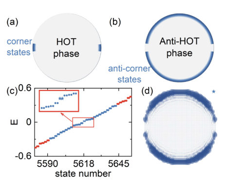
<figcaption class="paper-figure-caption"><b>Fig 1.</b> FIG. 1. (a, b) Schematic of the HOT phase with localized corner states in a circular nanoflake (a), and the anti-HOT phase with anti-corner states extending along most bound- aries but vanishing at specific corners (b). (c) Numerical energy levels of a finite-sized circular bilayer Chern insula- tor system, where anti-corner states are highlighted in blue symbols. The red rectangle indicates the near zero energy region, which is enlarged in the upper left inset. (d) Spatial distributions of representative anti-corner states marked by the star symbols in (c). The gray dots represent discrete lat- tice sites and the areas of the blue circles are proportional to the local density of states....</figcaption>
</figure>
<figure class="paper-figure-card">
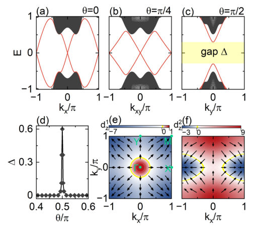
<figcaption class="paper-figure-caption"><b>Fig 2.</b> FIG. 2. (a-c) Band structures of nanoribbons with periodic boundary conditions along different edge directions. The edge angles are θ = 0 in (a), θ = π/4 in (b), and θ = π/2 in (c). Red and black lines correspond to edge states and bulk states, respectively. (d) The energy gap ∆as a function of edge an- gles θ. (e, f) Spin-texture maps in the Brillouin zone for layer 1 and layer 2, respectively. The black arrows represent the components of (dα x, dα y ), while the color represents the dα z component (with the yellow contour marking dα z = 0). Four green dots in (e) correspond to four high-symmetry points. The nanoribbon width is set to L = 300, and all other pa- rameters are the same as...</figcaption>
</figure>
<figure class="paper-figure-card">
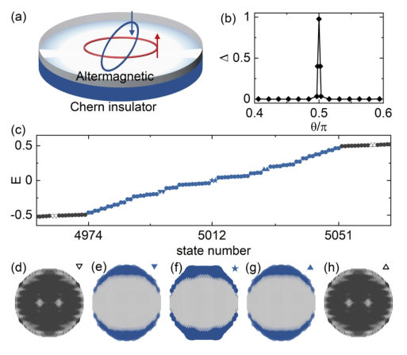
<figcaption class="paper-figure-caption"><b>Fig 3.</b> FIG. 3. (a) Schematic illustration of a Chern insulator with d- wave altermagnetic coupling. (b) Energy gap ∆vs edge angle θ with width L = 300. (c) Spectrum of a circular nanoflake, highlighting anti-corner (blue) and bulk (black) states. (d-h) Spatial distributions of the representative states marked in (c). Parameters: R = 40, m = B = 1, J = 0.9.</figcaption>
</figure>
<figure class="paper-figure-card">
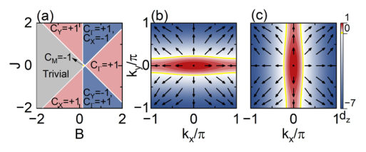
<figcaption class="paper-figure-caption"><b>Fig 4.</b> FIG. 4. (a) Phase diagram in the (B, J) plane with m = 1. Gray, red (yellow), and blue regions denote trivial, first-order topological, and anti-HOT phases, where the BIS encloses 0, 1, and 2 high-symmetry points, respectively. (b, c) Spin textures for two anti-HOT phase. Arrows (colors) indicate in-plane (out-of-plane) components. Parameters: B = 1, J = 0.9 in (b) and B = 1, J = −0.9 in (c).</figcaption>
</figure>
</div>

<p><strong>Summary.</strong> This paper introduces anti-higher-order topological insulators (anti-HOTIs) as the dual counterpart to conventional topological insulators. By analyzing a bilayer Chern insulator model, the authors demonstrate that anti-HOTIs exhibit a unique state distribution where edge states exist but corner states are suppressed. This work establishes anti-topology as a new theoretical framework for topological materials research.</p>
<p><strong>Why it may be interesting.</strong> The concept of anti-topology provides a new framework for classifying topological phases, which is highly relevant to understanding boundary physics in condensed matter systems, potentially leading to novel material designs.</p>
<details>
<summary>Detailed structure</summary>
<p><strong>Main problem.</strong> The paper addresses the need to explore the dual counterpart of topological states, introducing the concept of anti-topological states and anti-higher-order topological insulators (anti-HOTIs).</p>
<p><strong>Main result.</strong> The authors establish anti-topology as a new paradigm, demonstrating that anti-HOTIs host states along most boundaries but are characteristically absent at the corners, unlike conventional HOTIs.</p>
<p><strong>Method.</strong> The study uses theoretical modeling based on bilayer Chern insulator Hamiltonians and analyzes the topological invariant defined by the charges enclosed by the Band Inversion Surfaces (BIS).</p>
<p><strong>Model / system.</strong> The system is modeled using a bilayer Hamiltonian applied to a Chern insulator, incorporating components derived from a modified Qi–Wu–Zhang (QWZ) model. The analysis is performed on nanoribbons and nanoflakes.</p>
<p><strong>Key observables.</strong> The topological invariant is the set of topological charges enclosed by the BIS; key observables include the gap magnitude and the spatial distribution of edge/anti-corner states.</p>
<p><strong>Important parameters / regimes.</strong> Key parameters include the Chern numbers enclosed by the BIS at high-symmetry points ($\Gamma, X, Y, M$), and the system parameters $B$ and $J$ in the phase diagram analysis.</p>
<p><strong>Assumptions / limitations.</strong> The analysis assumes the system preserves inversion symmetry, which helps pin the topological charges at specific high-symmetry points in the Brillouin Zone.</p>
<p><strong>Figures summary.</strong> Figures illustrate the schematic difference between HOT (corner states) and anti-HOT (anti-corner states), show band structures of nanoribbons at varying angles, and present phase diagrams mapping the anti-HOT phase based on enclosed topological charges.</p>
<p><strong>Paper structure.</strong> The paper introduces the concept of anti-topology via duality, develops the model using a bilayer Hamiltonian, calculates the topological invariant using BIS analysis, and finally demonstrates the anti-HOT phase through numerical simulations and phase diagram construction.</p>
</details>
<details>
<summary>Abstract</summary>
<p>Duality is a fundamental concept in physics that connects complementary opposites like particles and holes. Similarly, while topological states in topological insulators localize at boundaries, the existence and nature of their dual counterparts remain unexplored. Here, we introduce anti-topological states as the dual of topological states, exemplified by anti-higher-order topological insulators. Unlike higher-order topological insulators, where states localize at corners, anti-higher-order topological insulators host states along edges but absent at corners, realizing an inverted distribution of states. We demonstrate this phenomenon in a bilayer Chern insulator with opposite Chern numbers, where the band inversion surfaces enclose distinct high-symmetry points. The topological invariant distinguishing these phases is given by the topological charges enclosed by band inversion surfaces. This work establishes anti-topology as a new paradigm, opening a chapter in topological research.</p>
</details>
<p><sub><a href="#top">↑ back to top</a></sub></p>

<p><a id="paper-2609.00887"></a></p>
<h3 id="large-exchange-magnetostriction-in-a-kagome-antiferromagnet-at-room-temperature"><a href="http://arxiv.org/abs/2609.00887v1">Large Exchange Magnetostriction in a Kagome Antiferromagnet at Room Temperature</a></h3>
<p><strong>Authors:</strong> Jie Du, Liang Yao, Hang Li, Xiaodong Zhou, Yuan Yao, Xuekui Xi, Yong-Chang Lau, Wenhong Wang<br>
<strong>Type:</strong> both · <strong>Category:</strong> other · <strong>PDF:</strong> <a href="https://arxiv.org/pdf/2609.00887v1">https://arxiv.org/pdf/2609.00887v1</a><br>
<strong>Analysis basis:</strong> full PDF text, analyzed in chunks
<strong>Topic relevance:</strong> <code>analog quantum simulation</code> <strong>2/5</strong></p>
<div class="figure-strip-hint">↔ Scroll figures horizontally</div>
<div class="paper-figures-scroll">
<figure class="paper-figure-card">
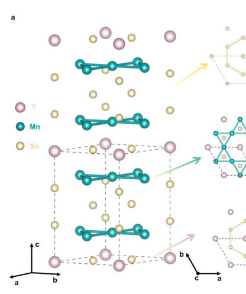
<figcaption class="paper-figure-caption"><b>Fig 1.</b> Figure 1. Crystal Structure and crystalline quality characterization of YMn6Sn6. (a) Schematic</figcaption>
</figure>
<figure class="paper-figure-card">
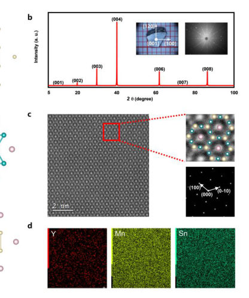
<figcaption class="paper-figure-caption"><b>Fig 2.</b> Figure 1a presents the crystal structure of YMn6Sn6, with Y, Mn, and Sn atoms</figcaption>
</figure>
<figure class="paper-figure-card">
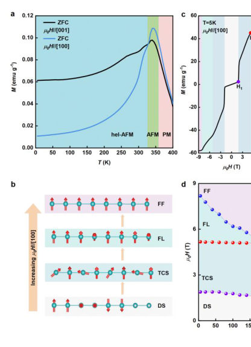
<figcaption class="paper-figure-caption"><b>Fig 3.</b> Figure 2. Magnetic properties and phase diagrams of YMn6Sn6 under applied fields along</figcaption>
</figure>
<figure class="paper-figure-card">
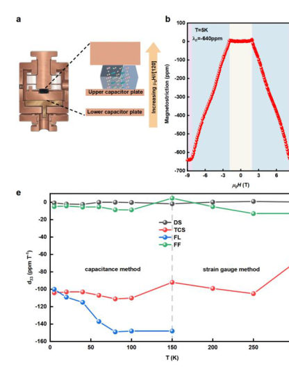
<figcaption class="paper-figure-caption"><b>Fig 4.</b> Figure 4. Capacitance method magnetostriction measurements and temperature-dependent</figcaption>
</figure>
<figure class="paper-figure-card">
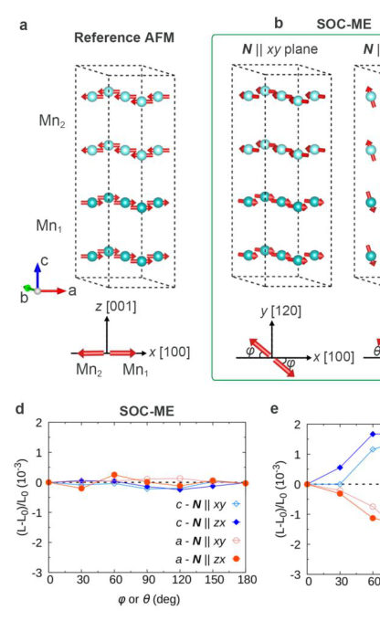
<figcaption class="paper-figure-caption"><b>Fig 5.</b> Figure 5. First-principles calculations of exchange-driven spin-lattice coupling in YMn6Sn6.</figcaption>
</figure>
</div>

<p><strong>Summary.</strong> This work reports the observation of large, highly reversible magnetostriction in the kagome antiferromagnet YMn6Sn6 at room temperature. The mechanism is determined to originate from the competition between different magnetic exchange interactions, which drive the system from a helical to a collinear magnetic state. This establishes kagome helimagnets as a promising, low-dissipation platform for magnetomechanical applications.</p>
<p><strong>Why it may be interesting.</strong> While focused on condensed matter magnetism, the concept of field-induced, reversible lattice strain driven by competing quantum interactions (exchange coupling) provides a model for understanding controllable, low-dissipation coupling mechanisms relevant to quantum sensing or actuation.</p>
<details>
<summary>Detailed structure</summary>
<p><strong>Main problem.</strong> The research addresses the need for high-performance magnetostrictive materials, specifically by systematically exploring large magnetostriction in antiferromagnets, which are often overlooked compared to ferromagnets.</p>
<p><strong>Main result.</strong> The kagome antiferromagnet YMn6Sn6 exhibits large, nearly hysteresis-free magnetostriction (exceeding 400 ppm) at room temperature, which is attributed to the competition between intralayer and interlayer exchange interactions.</p>
<p><strong>Method.</strong> The study combines extensive experimental measurements (magnetostriction, XRD, STEM) with first-principles theoretical calculations (DFT) to model the magnetoelastic coupling.</p>
<p><strong>Model / system.</strong> The physical system is the kagome helimagnet YMn6Sn6, characterized by competing magnetic exchange interactions (intralayer FM vs. interlayer coupling) that stabilize a noncollinear helical magnetic ground state.</p>
<p><strong>Key observables.</strong> Large anisotropic and volume magnetostriction ($\sim 300-400$ ppm), field-induced magnetic phase transitions (helical to collinear), and the degree of magnetostrictive reversibility.</p>
<p><strong>Important parameters / regimes.</strong> Room temperature (300 K), applied magnetic field up to 9 T, and the ratio/competition strength between intralayer and interlayer exchange interactions.</p>
<p><strong>Assumptions / limitations.</strong> The large magnetostriction is primarily driven by exchange-interaction-mediated spin structure reconstruction rather than conventional Spin-Orbit Coupling (SOC) effects.</p>
<p><strong>Figures summary.</strong> Figures illustrate the crystal structure, XRD patterns, STEM images confirming homogeneity, and detailed plots showing anisotropic strain responses ($\lambda_{\parallel}$ vs. $\lambda_{\perp}$) correlated with magnetic field-induced phase transitions.</p>
<p><strong>Paper structure.</strong> The paper establishes the technological need, presents structural characterization, details the magnetic phase transitions under field, quantifies the anisotropic magnetostriction, and finally uses DFT calculations to prove the exchange-driven nature of the magnetoelastic coupling.</p>
</details>
<details>
<summary>Abstract</summary>
<p>The pursuit of high-performance magnetostrictive materials is crucial for advancing technologies in sensing, actuation, and microelectromechanical systems. Although pronounced magnetostrictive effects have been observed in a few ferromagnets, a systematic exploration of magnetostriction across a broader range of antiferromagnets remains limited. Here, we report the observation of large magnetostriction in the kagome antiferromagnet YMn6Sn6. Under a magnetic field, the system undergoes a field-induced evolution from a helical magnetic ground state toward a collinear field-polarized state, accompanied by a large anisotropic lattice strain and a substantial volume magnetostriction exceeding 400 ppm at room temperature. Remarkably, the magnetostrictive response remains nearly fully reversible up to 9 T with nearly hysteresis-free behavior, effectively minimizing the energy dissipation commonly associated with domain-wall pinning. Combined experimental measurements and theoretical calculations reveal that the large, nearly hysteresis-free magnetostriction originates from the competition between intralayer ferromagnetic and interlayer exchange interactions. This exchange-driven magnetoelastic coupling further gives rise to a strongly direction-dependent lattice distortion pathway. This work establishes kagome helimagnets as a tunable platform for low-dissipation magnetoelastic functionalities and responsive magnetomechanical applications.</p>
</details>
<p><sub><a href="#top">↑ back to top</a></sub></p>

<p><a id="paper-2609.01476"></a></p>
<h3 id="superconducting-diode-effect-from-field-induced-math896math-pairing-in-ising-superconductors"><a href="http://arxiv.org/abs/2609.01476v1">Superconducting diode effect from field-induced $s+if$ pairing in Ising superconductors</a></h3>
<p><strong>Authors:</strong> Alex Levchenko, Maxim Khodas<br>
<strong>Type:</strong> theory · <strong>Category:</strong> other · <strong>PDF:</strong> <a href="https://arxiv.org/pdf/2609.01476v1">https://arxiv.org/pdf/2609.01476v1</a><br>
<strong>Analysis basis:</strong> full PDF text, analyzed in chunks
<strong>Topic relevance:</strong> <code>Keldysh / 2PI / non-Gaussian methods</code> <strong>2/5</strong></p>
<div class="figure-strip-hint">↔ Scroll figures horizontally</div>
<div class="paper-figures-scroll">
<figure class="paper-figure-card">
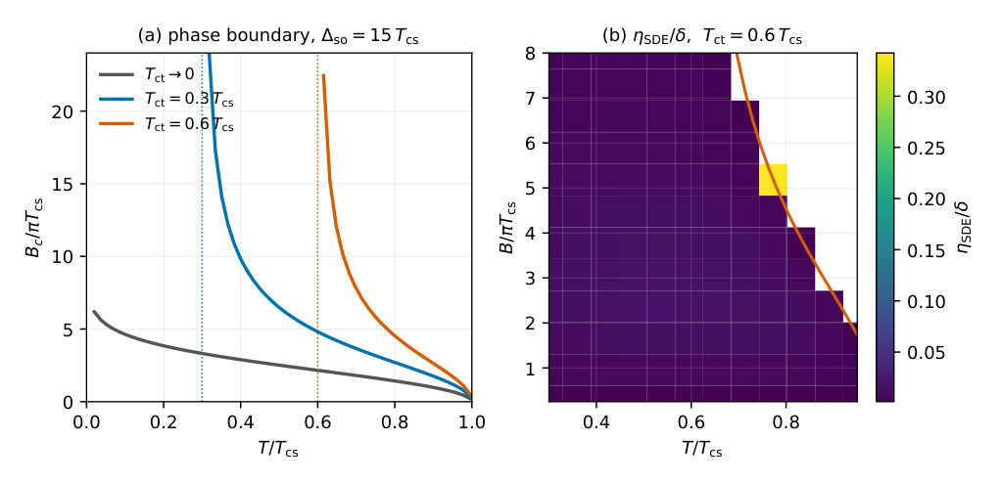
<figcaption class="paper-figure-caption"><b>Fig 1.</b> FIG. 1. (a) Phase boundary Bc(T) of the coupled singlet-triplet system, obtained from the vanishing of the lowest eigenvalue of the quadratic form (35), for three strengths of the triplet channel. The attractive E′′ channel enhances Bc and drives its divergence as T →Tct (dotted verticals), consistent with Ref. [44]. (b) Diode efficiency ηSDE/δ across the (T, B) plane for Tct = 0.6 Tcs, with the phase boundary overlaid. The efficiency is maximal in a ridge adjacent to the triplet-enhanced critical field, reaching values an order of magnitude above the low-field ones. Parameters: ∆so = 15 Tcs, δ = 0.1.</figcaption>
</figure>
<figure class="paper-figure-card">
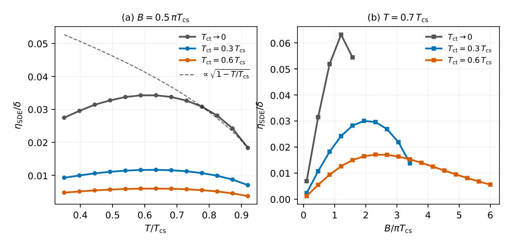
<figcaption class="paper-figure-caption"><b>Fig 2.</b> FIG. 2. (a) Temperature dependence of the diode efficiency at fixed B = 0.5 πTcs for three strengths of the triplet channel. The dashed line is the p</figcaption>
</figure>
<figure class="paper-figure-card">
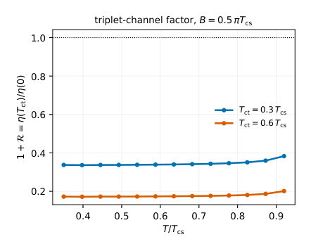
<figcaption class="paper-figure-caption"><b>Fig 3.</b> FIG. 3. Triplet-channel factor 1+R(T) = ηSDE(Tct)/ηSDE(Tct → 0) at B = 0.5 πTcs. At weak fields the collective conversion path interferes destructively with the direct one and suppresses the effi- ciency by a nearly temperature-independent factor, in accord with the anatomy of Eqs. (45) and (46).</figcaption>
</figure>
</div>

<p><strong>Summary.</strong> This theoretical work analyzes the superconducting diode effect in Ising superconductors due to field-induced s+if pairing. By developing a two-component Ginzburg-Landau theory, the authors demonstrate that the SDE is governed by the coupling between singlet and triplet channels. This effect provides a novel transport measurement to detect the presence of hidden triplet pairing states.</p>
<p><strong>Why it may be interesting.</strong> The strong coupling between magnetic fields, spin-orbit coupling, and superconducting symmetry breaking provides a rich platform for studying emergent quantum phenomena in condensed matter systems, relevant to understanding topological superconductivity.</p>
<details>
<summary>Detailed structure</summary>
<p><strong>Main problem.</strong> The paper investigates the superconducting diode effect (SDE) arising from field-induced s+if pairing in Ising superconductors.</p>
<p><strong>Main result.</strong> The SDE is shown to be a transport probe for the hidden triplet pairing channel, with the diode response strength controlled by the ratio of Zeeman to spin-orbit energies ($\Delta Z/\Delta 	ext{so}$).</p>
<p><strong>Method.</strong> The authors construct and analyze a symmetry-constrained two-component Ginzburg-Landau theory for coupled singlet and triplet order parameters, deriving coefficients from a microscopic model.</p>
<p><strong>Model / system.</strong> The system is an Ising superconductor (e.g., monolayer TMDs) subjected to an in-plane magnetic field, which induces an s+if condensate character via triplet Cooper pairs.</p>
<p><strong>Key observables.</strong> Superconducting Diode Effect ($\eta_{	ext{SDE}}$), Lifshitz invariants, and the superconducting order parameters ($\psi$ and $\mathbf{d}$).</p>
<p><strong>Important parameters / regimes.</strong> Zeeman energy ($\Delta Z$), spin-orbit energy ($\Delta 	ext{so}$), and the ratio $\Delta Z/\Delta 	ext{so}$.</p>
<p><strong>Assumptions / limitations.</strong> The analysis relies on the GL theory framework and the assumption that the triplet sector can be integrated out to yield an effective single-component theory.</p>
<p><strong>Figures summary.</strong> Figure 3 illustrates the temperature and field dependence of the diode efficiency, showing the triplet channel extends the diode regime beyond the singlet-only critical field.</p>
<p><strong>Paper structure.</strong> The paper progresses from establishing the physical mechanism (SOC leading to triplet pairing and Lifshitz invariants) to constructing the full GL theory, deriving effective coefficients, and finally analyzing the resulting SDE behavior under varying field strengths.</p>
</details>
<details>
<summary>Abstract</summary>
<p>The in-plane critical field of Ising superconductors exceeds the Pauli limit by an order of magnitude because the Ising spin-orbit coupling locks the electron spins out of the basal plane. The same locking converts an in-plane Zeeman field into a source of equal-spin triplet Cooper pairs, so that the field-driven condensate acquires an $s+if$ character. We show that this conversion channel also generates Lifshitz invariants, the odd-in-momentum terms of the Ginzburg-Landau expansion responsible for the superconducting diode effect. When the basal mirror symmetry of the monolayer is lifted by a substrate or a gate, the field-induced triplets couple linearly to the Cooper-pair momentum, and an intrinsic diode response develops whose strength is set by the ratio of the Zeeman and spin-orbit energies rather than by the small ratio of the spin-orbit and Fermi energies familiar from parity-mixing mechanisms. We construct the symmetry-constrained two-component Ginzburg-Landau theory of the coupled singlet and triplet order parameters and derive all of its coefficients from the microscopic model of an Ising superconductor; the complete functional, including all gradient and quartic terms, is generated by a single pair-breaking function of temperature, field, and Cooper-pair momentum. An attractive triplet channel reshapes the diode response: at weak fields it suppresses the efficiency through destructive interference between the direct and the collective-mode conversion paths, while at strong fields it extends the diode regime well beyond the singlet-only critical field, with the maximal efficiency reached along the triplet-enhanced phase boundary. The diode effect thereby serves as a transport probe of a hidden triplet pairing channel and of the field-induced $s+if$ state.</p>
</details>
<p><sub><a href="#top">↑ back to top</a></sub></p>

<p><a id="paper-2609.00631"></a></p>
<h3 id="floquet-scattering-and-fano-resonances-in-nodal-ring-and-multi-weyl-semimetals-role-of-propagating-and-evanescent-modes"><a href="http://arxiv.org/abs/2609.00631v1">Floquet scattering and Fano resonances in nodal-ring and multi-Weyl semimetals: Role of propagating and evanescent modes</a></h3>
<p><strong>Authors:</strong> Sandip Bera, Ipsita Mandal<br>
<strong>Type:</strong> theory · <strong>Category:</strong> other · <strong>PDF:</strong> <a href="https://arxiv.org/pdf/2609.00631v1">https://arxiv.org/pdf/2609.00631v1</a><br>
<strong>Analysis basis:</strong> full PDF text, analyzed in chunks
<strong>Topic relevance:</strong> <code>Full counting statistics</code> <strong>1/5</strong> · <code>Keldysh / 2PI / non-Gaussian methods</code> <strong>1/5</strong> · <code>driven-dissipative phase transition</code> <strong>1/5</strong> · <code>methods for driven-dissipative</code> <strong>1/5</strong> · <code>non-equilibrium universality</code> <strong>1/5</strong></p>
<div class="figure-strip-hint">↔ Scroll figures horizontally</div>
<div class="paper-figures-scroll">
<figure class="paper-figure-card">
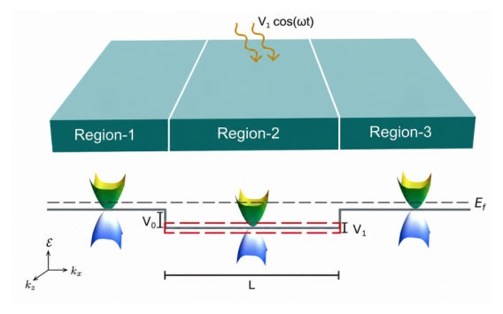
<figcaption class="paper-figure-caption"><b>Fig 1.</b> FIG. 1. Schematic of the scattering geometry for a quasiparticle incident on a time-periodic potential well in a double-Weyl (J = 2) mWSM. The potential is oriented along the x-axis, dividing the propagation direction into three regions: region I (x &lt; −L/2) contains the incident and reflected waves, region II (−L/2 ≤x ≤L/2) contains the driven potential well of width L and depth V0, and region III (x &gt; L/2) contains the transmitted waves. A time-periodic modulation of amplitude V1 and frequency ω is applied to the well, indicated by the red dashed lines marking the oscillating potential boundaries. Outside the well, the multi-Weyl cone has a linear dispersion along kx and is filled up to...</figcaption>
</figure>
<figure class="paper-figure-card">
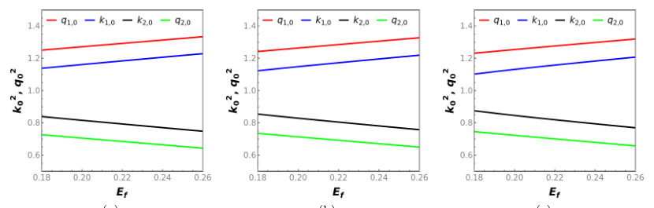
<figcaption class="paper-figure-caption"><b>Fig 2.</b> FIG. 2. Variation of the squared longitudinal wavevectors as a function of Fermi energy for the undriven case (m = n = 0). Subfigures (a), (b), and (c) show the squares of the wavevectors against the Fermi energy (Ef) for kz = 0.1 M, 0.12 M, and 0.14 M, respectively, with ky fixed at 0.1 M. Within the displayed energy-window, the squared wavevectors remain positive, indicating that all four channels are propagating and contribute directly to transport. This is the regime of complete multi-channel propagation. The plot legends encode the magnitudes of the individual momentum-vectors. All wavevectors, energy scales, and inverse lengths are expressed in units of M. The remaining parameters are...</figcaption>
</figure>
<figure class="paper-figure-card">
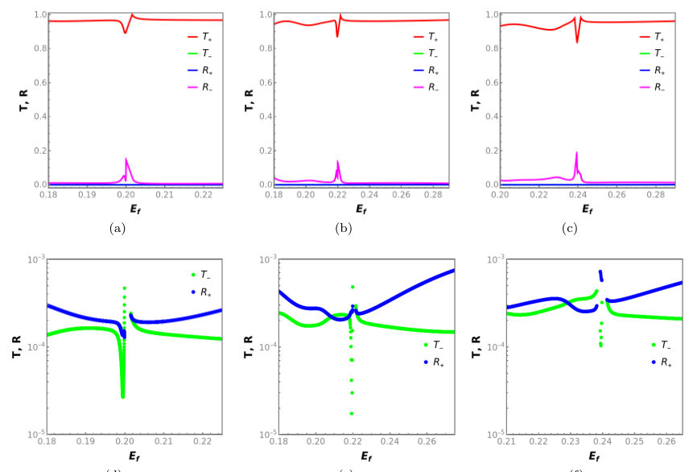
<figcaption class="paper-figure-caption"><b>Fig 3.</b> FIG. 3. Reflection and transmission coefficients as functions of Fermi energy for different values of longitudinal momentum. Subfigures (a), (b), and (c) show the Fermi energy dependence of the reflection (R+, R−) and transmission (T+, T−) coefficients for three values of kz, 0.1 M, 0.12 M, and 0.14 M, with ky = 0.1M. The lower subfigures show the same data on a logarithmic scale, which highlights subtle features, such as sharp dips or small oscillations, that are obscured on a linear scale. All wavevectors, energy scales, and inverse lengths are expressed in units of M. The remaining parameters are fixed at B = 1 M−1, ω = 0.05 M, V0 = 0.1 M, V1 = 0.025 M, and L = 25 M−1.</figcaption>
</figure>
<figure class="paper-figure-card">
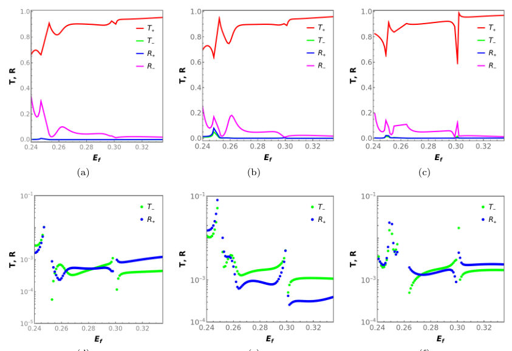
<figcaption class="paper-figure-caption"><b>Fig 4.</b> FIG. 4. Reflection and transmission coefficients as functions of incident energy for different values of transverse momentum. Subfigures (a), (b), and (c) show the energy dependence of the reflection (R+, R−) and transmission (T+, T−) coefficients for three values of transverse momentum, ky = 0.1 M, 0.3 M, and 0.5 M. Unlike Fig. 3, where ky is fixed and kz varies, here kz is kept constant at 0.2 M to isolate the effect of ky on the scattering characteristics. Increasing ky raises the transverse kinetic energy and changes the coupling between Floquet sidebands, shifting the resonance patterns in both channels. The lower subfigures show the same data on a logarithmic scale, which resolves...</figcaption>
</figure>
<figure class="paper-figure-card">
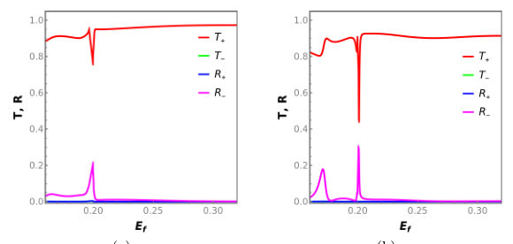
<figcaption class="paper-figure-caption"><b>Fig 5.</b> FIG. 5. Reflection and transmission coefficients as functions of incident energy for different barrier widths. All wavevectors k, energy scales, and inverse lengths are expressed in units of M. Subfigures (a) and (b) show the reflection (R+, R−) and transmission (T+, T−) coefficients for barrier widths of L = 30 M−1 and L = 60 M−1, respectively. The remaining parameters are fixed at ky = 0.1M, kz = 0.1M, B = 1 M−1, ω = 0.05 M, V0 = 0.1 M, and V1 = 0.025 M.</figcaption>
</figure>
</div>

<p><strong>Summary.</strong> This work extends Floquet scattering theory to analyze quantum transport in topological semimetals like nodal-ring and multi-Weyl systems under periodic driving. By solving the full boundary problem, the authors prove that while evanescent modes are required for mathematical consistency, only propagating modes dictate observable transport properties. This establishes a unified framework for understanding Floquet-induced phenomena like Fano resonances in these complex materials.</p>
<p><strong>Why it may be interesting.</strong> The rigorous mathematical treatment of boundary conditions in the presence of time-periodic driving and complex band structures (Weyl/Nodal-Ring) provides a powerful, general framework for analyzing open quantum systems dynamics.</p>
<details>
<summary>Detailed structure</summary>
<p><strong>Main problem.</strong> The paper develops a comprehensive Floquet scattering theory to analyze quantum transport in periodically driven nodal-ring and multi-Weyl semimetals.</p>
<p><strong>Main result.</strong> It establishes that while evanescent modes are mathematically necessary for boundary matching, they do not contribute to measurable transport quantities like transmission or shot noise, which are determined entirely by propagating channels.</p>
<p><strong>Method.</strong> The authors solve the full boundary-value problem using Floquet scattering theory, constructing the scattering matrix by matching wavefunctions and their derivatives at potential interfaces.</p>
<p><strong>Model / system.</strong> The study focuses on Nodal-Ring Semimetals (NRSs) and multi-Weyl Semimetals (mWSMs) subjected to a time-periodic driving potential. The analysis involves solving the time-dependent Schrödinger equation in the Floquet basis.</p>
<p><strong>Key observables.</strong> Transmission, reflection, pumped shot noise, and Floquet-induced Fano resonance features.</p>
<p><strong>Important parameters / regimes.</strong> The driving frequency ($\omega$), the potential strength ($V_0, V_1$), and the topological nature of the semimetals (NRSs, mWSMs).</p>
<p><strong>Assumptions / limitations.</strong> The analysis assumes the zero-temperature limit for shot noise calculations and relies on the mathematical necessity of including evanescent modes for consistency in nonlinear dispersion regimes.</p>
<p><strong>Figures summary.</strong> Figure 1 schematically illustrates the scattering geometry for a quasiparticle incident on a time-periodic potential well in a double-Weyl mWSM, dividing the space into incident, well, and transmitted regions.</p>
<p><strong>Paper structure.</strong> The paper builds from developing the full Floquet scattering formalism for anisotropic topological semimetals, deriving the scattering matrix by solving boundary conditions across interfaces, and finally analyzing the resulting transport coefficients and Fano resonance signatures.</p>
</details>
<details>
<summary>Abstract</summary>
<p>We develop a comprehensive Floquet scattering theory for quantum transport in periodically driven nodal-ring semimetals (NRSs) and multi-Weyl semimetals (mWSMs), extending our earlier study reported in Annalen der Physik 535, 2200460 (2023), in which evanescent modes were neglected, to a complete formalism that includes both propagating and evanescent channels. By solving the full boundary-value problem, we obtain the complete set of scattering states and show that, although evanescent modes are indispensable for satisfying the matching conditions at the potential interfaces, they carry zero net probability current and do not contribute to any observable transport quantity. We identify a previously unexplored transport regime in NRSs in which two propagating channels coexist and participate in coherent scattering, producing multi-channel quantum interference and Floquet-induced Fano resonances. The transmission, reflection, pumped shot noise, and the associated Fano resonance features are determined entirely by the propagating channels, and the resonance energies coincide with those of the corresponding quasi-bound states of the static potential well. Our results establish a unified framework for Floquet transport in anisotropic topological semimetals, and confirm that the approximation of neglecting evanescent modes in our earlier work is justified for all measurable transport properties.</p>
</details>
<p><sub><a href="#top">↑ back to top</a></sub></p>

<p><a id="paper-2609.01149"></a></p>
<h3 id="probing-nonlinear-interactions-of-dipolar-interlayer-excitons-in-mosemath908mathwsemath909math-heterobilayers"><a href="http://arxiv.org/abs/2609.01149v1">Probing Nonlinear Interactions of Dipolar Interlayer Excitons in MoSe$_2$/WSe$_2$ Heterobilayers</a></h3>
<p><strong>Authors:</strong> Sai Shradha, Luc F. Oswald, Md Tarik Hossain, Lukas Krelle, Nicole Engel, Axel Printschler, Julian Führer, Honey Jayeshkumar Shah, Daria I. Markina, Kenji Watanabe, Takashi Taniguchi, Andrey Turchanin, Bernhard Urbaszek<br>
<strong>Type:</strong> experiment · <strong>Category:</strong> other · <strong>PDF:</strong> <a href="https://arxiv.org/pdf/2609.01149v1">https://arxiv.org/pdf/2609.01149v1</a><br>
<strong>Analysis basis:</strong> full PDF text, analyzed in chunks
<strong>Topic relevance:</strong> <code>analog quantum simulation</code> <strong>1/5</strong> · <code>driven-dissipative phase transition</code> <strong>1/5</strong> · <code>quantum measurements</code> <strong>1/5</strong> · <code>quantum optics experiment</code> <strong>1/5</strong></p>
<div class="figure-strip-hint">↔ Scroll figures horizontally</div>
<div class="paper-figures-scroll">
<figure class="paper-figure-card">
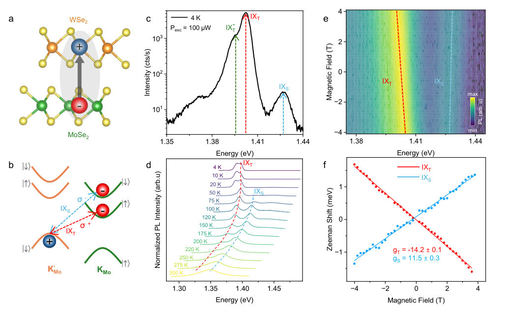
<figcaption class="paper-figure-caption"><b>Fig 1.</b> FIG. 1. a Schematic of MoSe2/WSe2 heterobilayer. b Band alignment and spin configuration of the type-II MoSe2/WSe2 heterostructure, illustrating interlayer charge transfer and the formation of spin-singlet (IXS) and spin-triplet (IXT) IXs. c PL spectrum from the heterobilayer resolving multiple interlayer exciton resonances such as the spin-triplet trion IX− T, the spin-triplet IXT and the spin-singlet IXS states at T = 4 K. d Temperature-dependent PL spectra ranging from 4 to 300 K showing the energy shift of the PL peaks following a Varshni function depicted with dashed curves. e Magnetic field dependent shift in the emission energy of IXT and IXS. f Zeeman shifts and the corresponding...</figcaption>
</figure>
<figure class="paper-figure-card">
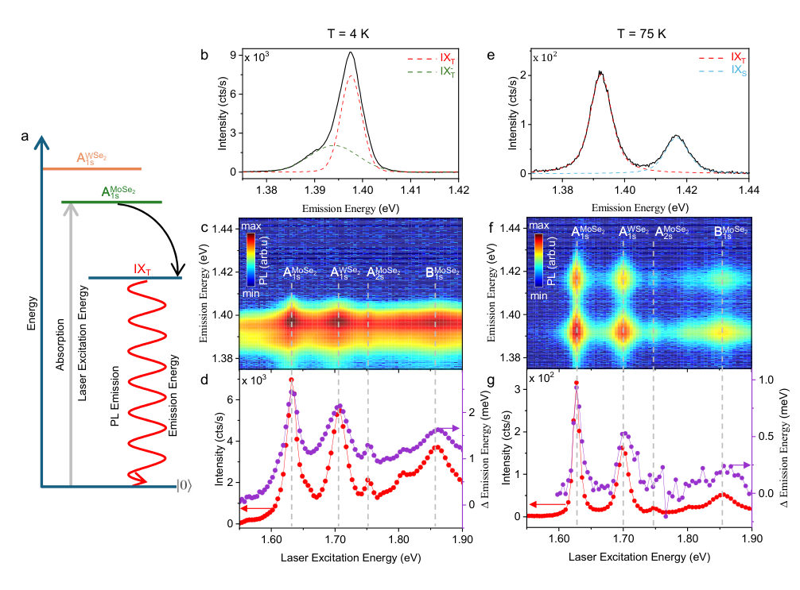
<figcaption class="paper-figure-caption"><b>Fig 2.</b> FIG. 2. a Schematic of absorption, charge transfer and PL emission under excitation resonant with the intralayer excitonic states. b PL emission under an excitation of 1.63 eV. The green and red dashed curves show the fits corresponding to IX− T and IXT respectively. c Heatmap of PL intensity while tuning the excitation energy. d Peak intensity (in red, left y-axis) and shift (∆) of the emission energy (in purple, right y-axis) of IXT as a function of the excitation energy. The grey dashed lines indicate the position of the resonances which are assigned to various intralayer states. b-d are all measured at T = 4 K with a constant excitation power of 20 µW. e-g The same as b-d measured at T...</figcaption>
</figure>
<figure class="paper-figure-card">
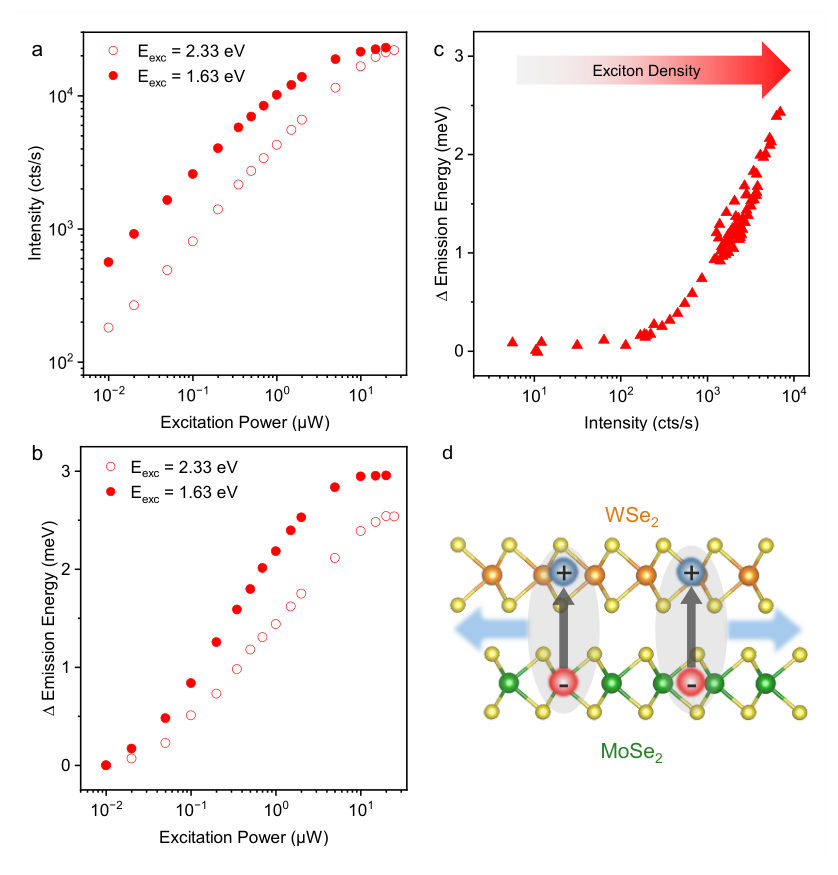
<figcaption class="paper-figure-caption"><b>Fig 3.</b> FIG. 3. Power dependent a intensity and b emission energy shift, of IXT under resonant (1.63 eV, solid circles) and off-resonant (2.33 eV, circles) excitation. c The shift of the emission energy with corresponding change in the intensity of the of IXT emission obtained from PLE at T = 4 K with a power of 20 µW. d Schematic of dipolar repulsion that dominates the interaction between dipolar IXs at high exciton densities.</figcaption>
</figure>
</div>

<p><strong>Summary.</strong> This work investigates the high-density behavior of interlayer excitons in MoSe2/WSe2 heterobilayers using PLE spectroscopy. By tuning the excitation energy, the researchers drive the system into a nonlinear regime, observing PL saturation and a systematic blueshift in the emission energy. This blueshift confirms the presence of a net repulsive exciton-exciton interaction, establishing PLE as a key diagnostic tool for these quantum materials.</p>
<p><strong>Why it may be interesting.</strong> The use of PLE spectroscopy to map out the nonlinear response of excitons in a solid-state van der Waals heterostructure provides a powerful experimental tool for studying many-body physics in quantum materials.</p>
<details>
<summary>Detailed structure</summary>
<p><strong>Main problem.</strong> The study aims to probe the nonlinear, high-density interactions of dipolar interlayer excitons (IXs) within MoSe2/WSe2 heterobilayers.</p>
<p><strong>Main result.</strong> The IX emission exhibits a systematic blueshift proportional to the increasing IX population, confirming a net repulsive exciton-exciton interaction dominated by dipole-dipole repulsion.</p>
<p><strong>Method.</strong> Excitation-energy-dependent photoluminescence excitation (PLE) spectroscopy and power-dependent PL measurements are used to selectively vary and probe the high-density regime of the excitons.</p>
<p><strong>Model / system.</strong> The physical system is a van der Waals heterobilayer of MoSe2/WSe2, which forms interlayer excitons due to type-II band alignment, giving rise to an intrinsic out-of-plane dipole moment.</p>
<p><strong>Key observables.</strong> Interlayer exciton photoluminescence (PL) energy shift (blueshift), saturation of PL response, and apparent broadening of intralayer resonances in PLE spectra.</p>
<p><strong>Important parameters / regimes.</strong> Low temperatures (4 K vs 75 K), varying excitation power, and the density regime achieved through resonant excitation.</p>
<p><strong>Assumptions / limitations.</strong> The observed blueshift is attributed to repulsive exciton-exciton interaction, and the PLE measurements are sensitive enough to probe nonlinear population dynamics.</p>
<p><strong>Figures summary.</strong> Figures summarize the structure, band alignment, temperature dependence (Varshni fit), magnetic field effects (Zeeman shifts), and the dependence of IX emission energy on excitation energy and power.</p>
<p><strong>Paper structure.</strong> The paper establishes the physical system and methods (PLE, power dependence) to access the nonlinear regime, presents evidence of nonlinear dynamics (saturation, broadening), and quantifies the interaction strength via the systematic blueshift of the IX emission.</p>
</details>
<details>
<summary>Abstract</summary>
<p>Interlayer excitons in transition-metal dichalcogenide heterobilayers possess intrinsic out-of-plane dipole moments, providing a platform for investigating exciton-exciton interactions at high densities. Here, we use excitation-energy-dependent photoluminescence excitation (PLE) spectroscopy to probe the nonlinear response of dipolar interlayer excitons in chemical vapor deposition-grown MoSe$_2$/WSe$_2$ heterobilayers. By tuning the excitation energy across intralayer exciton resonances at fixed excitation power, we selectively vary the population injected into the interlayer exciton states. Resonant excitation drives the system into a nonlinear regime, leading to saturation of the interlayer exciton photoluminescence and an apparent broadening of the intralayer $1s$ resonances in the PLE spectra. At the same time, the interlayer exciton emission exhibits a pronounced blueshift, reaching approximately 2.5 meV at 4 K and 1 meV at 75 K. The blueshift increases systematically with the interlayer exciton population and is consistent with a net repulsive exciton-exciton interaction, with contributions from dipole-dipole repulsion in the density regime investigated. Our results establish PLE as a sensitive approach for accessing the nonlinear, high-density regime of interlayer excitons and probing their interactions in van der Waals heterostructures.</p>
</details>
<p><sub><a href="#top">↑ back to top</a></sub></p>

<p><a id="paper-2609.01069"></a></p>
<h3 id="exchange-striction-determines-how-fast-antiferromagnetic-insulators-demagnetize"><a href="http://arxiv.org/abs/2609.01069v1">Exchange striction determines how fast antiferromagnetic insulators demagnetize</a></h3>
<p><strong>Authors:</strong> Aleksandr Buzdakov, Ravi Kaushik, Nikolai Khokhlov, Sergey Artyukhin, Alexey Kimel<br>
<strong>Type:</strong> both · <strong>Category:</strong> other · <strong>PDF:</strong> <a href="https://arxiv.org/pdf/2609.01069v1">https://arxiv.org/pdf/2609.01069v1</a><br>
<strong>Analysis basis:</strong> full PDF text, analyzed in chunks
<strong>Topic relevance:</strong> <code>correlated / nonlocal dissipation</code> <strong>1/5</strong> · <code>driven-dissipative phase transition</code> <strong>1/5</strong> · <code>non-equilibrium universality</code> <strong>1/5</strong></p>
<div class="figure-strip-hint">↔ Scroll figures horizontally</div>
<div class="paper-figures-scroll">
<figure class="paper-figure-card">
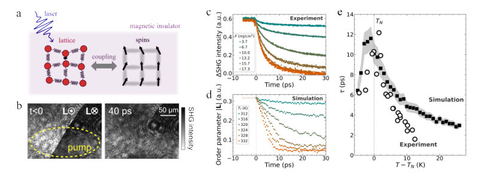
<figcaption class="paper-figure-caption"><b>Fig 1.</b> Figure 1: Ultrafast demagnetization of Cr2O3 and atomistic spin-dynamics simulations. (a) Schematic of the experiment: the pump pulse heats the lattice subsystem, and the resulting hot phonons transfer energy to the spins, reducing the order parameter |L|. (b) Second-harmonic- generation snapshots of a two-domain region of Cr2O3 before and 40 ps after a pump pulse of fluence F = 17.3 mJ/cm2. The domain contrast reflects the magnitude of Néel vector L and drops sharply after the pump pulse. The dashed line marks the pumped area. (c) Time-dependent SHG contrast at pump fluences from 3.7 to 17.3 mJ/cm2, recorded at an initial temperature of 300 K. (d) Time evolution of the order parameter |L|...</figcaption>
</figure>
<figure class="paper-figure-card">
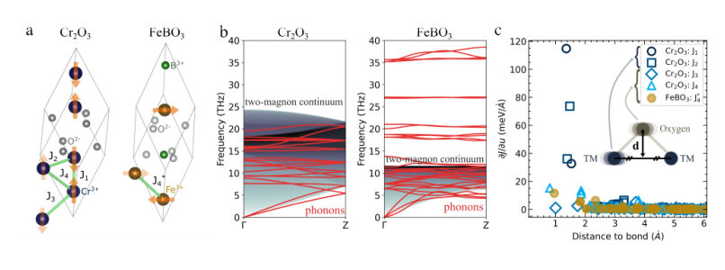
<figcaption class="paper-figure-caption"><b>Fig 2.</b> Figure 2: Magnons, phonons and exchange striction in Cr2O3 and FeBO3. (a) Rhom- bohedral primitive cells of Cr2O3 (left) and FeBO3 (right). Arrows indicate the sublattice mag- netization, bold lines mark the symmetry-inequivalent exchange paths. (b) Phonon dispersions (red lines) and two-magnon continuum (grey shading) along the Γ-Z path. The continuum is obtained by sampling ωµ(k) + ων(Q −k) over the full Brillouin zone for each Q on the path. Phonon branches lying inside the continuum satisfy the resonance condition in Eq. (1) and can decay into a magnon pair. The Cr2O3 continuum extends up to ∼25 THz and overlaps almost the entire phonon spectrum, while the FeBO3 continuum is confined...</figcaption>
</figure>
<figure class="paper-figure-card">
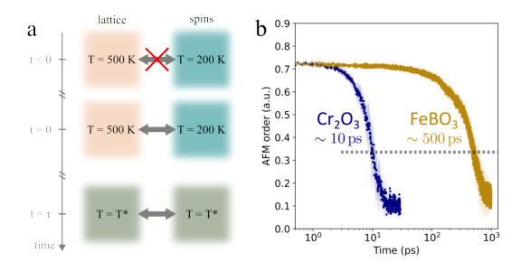
<figcaption class="paper-figure-caption"><b>Fig 3.</b> Figure 3: Coupled spin-lattice dynamics simulations. (a) Simulation protocol. For t &lt; 0 the lattice is thermalized at 500 K and the spin subsystem at 200 K with the spin-lattice coupling switched off (red cross), so the two subsystems reach equilibrium independently. At t = 0 the coupling is turned on (grey arrow) and the damping is removed; the combined system evolves microcanonically while energy flows from the hot lattice into the spins until the two subsystems reach a common effective temperature T ∗at t = τ. (b) Time evolution of the order parameter |L| for Cr2O3 (blue) and FeBO3 (gold), shown on a logarithmic time axis. The starting value below unity reflects the finite spin...</figcaption>
</figure>
</div>

<p><strong>Summary.</strong> This research establishes that the speed at which antiferromagnetic insulators demagnetize is controlled by the coupling between lattice vibrations (phonons) and spin excitations (magnons). By calculating the exchange striction tensor, the authors provide a predictive, computable parameter that successfully explains the vast difference in demagnetization rates observed between $  ext{Cr}_2   ext{O}_3$ and $ ext{FeBO}_3$.</p>
<p><strong>Why it may be interesting.</strong> The work provides a concrete, computable material parameter ($\partial J / \partial u$) that links fundamental lattice physics (phonons/displacements) directly to ultrafast magnetic dynamics, which is highly relevant for understanding energy dissipation and non-equilibrium quantum dynamics in solids.</p>
<details>
<summary>Detailed structure</summary>
<p><strong>Main problem.</strong> The paper aims to determine the fundamental physical mechanism that sets the speed limit for demagnetization in antiferromagnetic insulators.</p>
<p><strong>Main result.</strong> The demagnetization rate is governed by energy flow from the lattice into the spins, quantified by the exchange striction tensor ($\partial J / \partial u$). This mechanism explains the large difference in demagnetization speeds between $   ext{Cr}_2   ext{O}_3$ and $ ext{FeBO}_3$.</p>
<p><strong>Method.</strong> The study combines first-principles calculations (DFT+U) to compute exchange striction parameters with atomistic spin-lattice dynamics (SLD) simulations to model the time evolution of the magnetic order parameter.</p>
<p><strong>Model / system.</strong> The system involves antiferromagnetic insulators ($ ext{Cr}_2   ext{O}_3$, $    ext{FeBO}_3$) modeled using spin operators and phonon operators. The Hamiltonian is expanded to include an interaction term driven by the dependence of the exchange coupling ($J$) on atomic displacements ($\mathbf{u}$), leading to a one-phonon-two-magnon process.</p>
<p><strong>Key observables.</strong> Demagnetization time ($    au$) measured via time-resolved Second-Harmonic Generation (SHG) contrast; the exchange-striction tensor ($\partial J / \partial u$).</p>
<p><strong>Important parameters / regimes.</strong> The ratio of decay rates ($ au_{    ext{DM},1p1m}^{-1} /    au_{    ext{ex},1p2m}^{-1}$); the magnitude of the exchange coupling sensitivity to displacement.</p>
<p><strong>Assumptions / limitations.</strong> The analysis relies on perturbative expansions in atomic displacements and assumes that the one-phonon-two-magnon (1p2m) channel dominates over the Dzyaloshinskii-Moriya (DM)-driven 1p1m channel.</p>
<p><strong>Figures summary.</strong> Figures compare crystal structures and magnetic paths of $ ext{Cr}_2   ext{O}_3$ and $ ext{FeBO}_3$, showing the overlap between phonon dispersions and the two-magnon continuum, which dictates the coupling strength.</p>
<p><strong>Paper structure.</strong> The paper progresses from identifying the experimental challenge (fast demagnetization) to proposing the mechanism (lattice coupling via exchange striction). It details the theoretical derivation of the coupling vertex (1p2m process) and concludes by applying this framework to compare two specific materials, quantifying the rate difference.</p>
</details>
<details>
<summary>Abstract</summary>
<p>Antiferromagnets combine terahertz spin dynamics with insensitivity to stray fields, and how quickly their order can be manipulated sets the speed limit on device operation. Femtosecond optical pulses demagnetize antiferromagnetic insulators on timescales that span picoseconds to nanoseconds across compounds, and no material parameter is known that accounts for the spread or predicts where a new compound will fall. In a compensated antiferromagnet, no angular momentum needs to leave the spin system, so the rate is set by energy flow from the lattice into the spins. Time-resolved second-harmonic generation experiments show that Cr2O3 demagnetizes within 2 ps once the lattice is driven above the Neel temperature, two orders of magnitude faster than the structurally similar FeBO3. First-principles calculations trace the disparity to exchange striction: short Cr-Cr contacts make the exchange coupling tenfold more sensitive to atomic displacements and widen the phase space for phonon decay into magnon pairs. Spin-lattice simulations with ab initio parameters reproduce the order of magnitude of the measured ratio. The derivative of the exchange coupling with respect to the ionic displacement thus emerges as a computable parameter that predicts how fast an insulating antiferromagnet can be demagnetized. The results advance our understanding of ultrafast control in insulating antiferromagnets, and suggest a practical pathway to screen candidate materials for thermally assisted antiferromagnetic memory before synthesis.</p>
</details>
<p><sub><a href="#top">↑ back to top</a></sub></p>

<p><a id="paper-2609.01602"></a></p>
<h3 id="singular-weak-field-thermodynamics-of-2d-superconductors"><a href="http://arxiv.org/abs/2609.01602v1">Singular Weak-Field Thermodynamics of 2D Superconductors</a></h3>
<p><strong>Authors:</strong> Guopeng Xu, Chunli Huang<br>
<strong>Type:</strong> theory · <strong>Category:</strong> statistical mechanics · <strong>PDF:</strong> <a href="https://arxiv.org/pdf/2609.01602v1">https://arxiv.org/pdf/2609.01602v1</a><br>
<strong>Analysis basis:</strong> full PDF text, analyzed in chunks
<strong>Topic relevance:</strong> <code>Keldysh / 2PI / non-Gaussian methods</code> <strong>1/5</strong> · <code>analog quantum simulation</code> <strong>1/5</strong> · <code>quantum measurements</code> <strong>1/5</strong></p>
<div class="figure-strip-hint">↔ Scroll figures horizontally</div>
<div class="paper-figures-scroll">
<figure class="paper-figure-card">
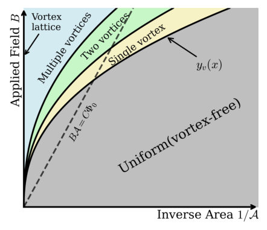
<figcaption class="paper-figure-caption"><b>Fig 1.</b> Figure 1. Ground state of a 2D superconductor in the weak-field thermodynamic limit. The solid boundary separating the vortex-free and single-vortex states is described by Eq. (1), while the remain- ing boundaries are inferred schematically by continuity. The black dashed line represents a fixed-flux trajectory where Φ0 = ℎ/2𝑒.</figcaption>
</figure>
<figure class="paper-figure-card">
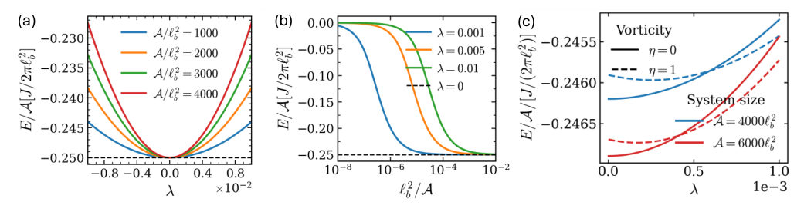
<figcaption class="paper-figure-caption"><b>Fig 2.</b> Figure 2. (a) Energy density dependence on 𝜆for several system areas. The narrowing valley with increasing A signals the emergence of a nonanalyticity at 𝜆= 0 in the thermodynamic limit. (b) Energy density dependence on inverse area for several fixed values of 𝜆. For any finite 𝜆, the energy density vanishes as A →∞, reflecting saturation of the total energy, whereas for A ≪𝜋ℓ2 𝐶it approaches the uniform zero-field bulk value indicated by the dashed line. (c) Comparison of energy density between the uniform and single-vortex states as a function of 𝜆for several system sizes.</figcaption>
</figure>
<figure class="paper-figure-card">
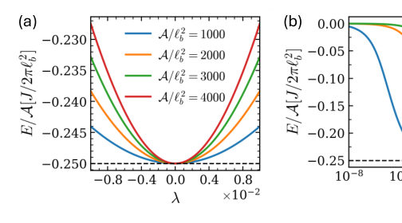
<figcaption class="paper-figure-caption"><b>Fig 3.</b> Fig. 2(a) and (b) show complementary cuts of Eq. (16). At fixed area, the energy density as a function of 𝐵forms a val- ley centered at 𝐵= 0 [Fig. 2(a)]. As A increases, the depth of the valley remains fixed at −𝜖0, while its width shrinks as 𝐵∗∼A−1/2. Consequently, its curvature at 𝐵= 0, which determines the diamagnetic magnetic susceptibility, diverges in the thermodynamic limit. The complementary fixed-𝐵cuts in Fig. 2(b) show that, for any nonzero 𝐵, the zero-winding en- ergy density vanishes as A →∞, whereas at 𝐵= 0 it remains equal to the bulk condensation-energy density −𝜖0. Thus, the energy landscape develops a singular, infinitely narrow valley at the origin (diverging diamagnetic...</figcaption>
</figure>
<figure class="paper-figure-card">
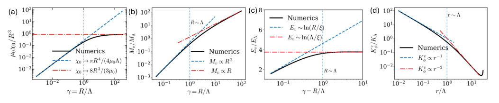
<figcaption class="paper-figure-caption"><b>Fig 4.</b> Figure 3. Screening crossover. (a) Diamagnetic response as a function of 𝛾= 𝑅/Λ. The numerical result approaches the weak screening behavior 𝜒0 = 𝑅4/(4𝜇0Λ) for 𝑅≪Λ, while saturating to the strong-screening limit 𝜒0 = 8𝑅3/(3𝜇0) for 𝑅≫Λ. (b) Orbital magnetic moment of a centered vortex, showing the crossover from 𝑀𝑣∝𝑅2 in the weak-screening regime to 𝑀𝑣∝𝑅in the strong-screening regime. 𝑀Λ ≡Φ0Λ/𝜇0. (c) Vortex stiffness energy. For 𝑅≪Λ it grows as 𝐸𝑣∼𝐸Λ ln(𝑅/𝜉) where 𝐸Λ ≡Φ2 0/(2𝜋𝜇0Λ), whereas for 𝑅≫Λ Pearl screening cuts off the logarithmic growth at the scale Λ, giving 𝐸𝑣∼𝐸Λ ln(Λ/𝜉). (d) Vortex sheet-current profile for 𝑅≫Λ, exhibiting the crossover from 𝐾𝑣 𝜙∝𝑟−1 at 𝑟≪Λ to 𝐾𝑣 𝜙∝𝑟−2 at 𝑟≫Λ. 𝐾Λ...</figcaption>
</figure>
<figure class="paper-figure-card">
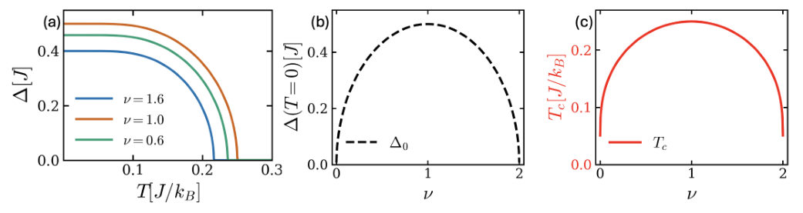
<figcaption class="paper-figure-caption"><b>Fig 5.</b> Figure 1. (a) The self-consistent gap solution as function of temperature. (b) The zero T superconducting gap as a function of total filling fraction. (c) The critical temperature 𝑇𝑐as a function of total filling fraction.</figcaption>
</figure>
</div>

<p><strong>Summary.</strong> This theoretical work analyzes the thermodynamics of 2D superconductors in a magnetic field, finding that the critical field for vortex formation depends on the sample size. By comparing weak and strong screening limits, the authors derive specific scaling laws for this critical field and establish a firm microscopic foundation for the weak-field ground state.</p>
<p><strong>Why it may be interesting.</strong> The study of size-dependent critical fields and the non-commutativity of limits is highly relevant to understanding finite-size effects in quantum materials, which is a key area in modern condensed matter theory.</p>
<details>
<summary>Detailed structure</summary>
<p><strong>Main problem.</strong> The paper investigates the weak-field thermodynamics of two-dimensional (2D) superconductors, specifically addressing the non-commutativity of the weak-field and thermodynamic limits.</p>
<p><strong>Main result.</strong> The lower critical field required to nucleate the first vortex is size-dependent, scaling differently in weak ($\propto \mathcal{A}^{-1}\ln(\mathcal{A})$) and strong ($\propto \mathcal{A}^{-1/2}$) screening regimes.</p>
<p><strong>Method.</strong> The analysis uses microscopic models, solving for the ground state energy of both vortex-free and single-vortex states by incorporating screening effects via coupling to 3D Maxwell equations.</p>
<p><strong>Model / system.</strong> The system is a 2D superconductor (e.g., atomically thin TMDs) modeled using a Hamiltonian involving Landau levels and attractive contact interactions. The study compares the energy density in the presence of an external magnetic field ($B$) versus the thermodynamic limit ($A 	o \infty$).</p>
<p><strong>Key observables.</strong> Lower critical field $B_v(\mathcal{A})$, energy density ($E/A$), and the vortex orbital moment ($m_v$).</p>
<p><strong>Important parameters / regimes.</strong> System area ($\mathcal{A}$), external magnetic field ($B$), screening regimes (weak vs. strong), and the ratio of characteristic length scales ($\xi, \Lambda, R$).</p>
<p><strong>Assumptions / limitations.</strong> The analysis relies on treating the problem non-perturbatively using Landau quantization and making approximations in momentum space for calculating vortex self-energies.</p>
<p><strong>Figures summary.</strong> Figures illustrate the ground state energy dependence on field and area, showing non-analytic behavior at zero field and comparing energy densities for uniform vs. single-vortex states.</p>
<p><strong>Paper structure.</strong> The paper progresses by establishing the physical difference between 2D and 3D superconductors, deriving the energy functional for vortex states, analyzing the scaling laws for the first-vortex field in different screening regimes, and concluding with the thermodynamic limit behavior.</p>
</details>
<details>
<summary>Abstract</summary>
<p>In a bulk 3D type-II superconductor, the lower critical field at which an isolated vortex becomes thermodynamically favorable is a size-independent material property. We show that the situation is different in 2D superconductors: the larger the superconductor, the weaker the field needed to create its first vortex. The lower critical field in 2D is always size-dependent. For a disk of area $\mathcal A$, the lower critical field $B_v(\mathcal A)$ scales as $\mathcal A^{-1}\ln(\mathcal A/\mathcal A_0)$ in the weak-screening regime and as $\mathcal A^{-1/2}$ in the strong-screening regime. We derive these results from an analytically tractable microscopic model that admits many-body wavefunctions for both the uniform and singly quantized vortex states in a magnetic field, and incorporate screening by coupling their long-distance 2D supercurrents to 3D Maxwell equations. These results motivate organizing the weak-field ground-state of a 2D superconductor in the $(1/\mathcal A,B)$ plane. The origin represents the zero-field thermodynamic limit and it is singular. Approaching the origin along the $B$ axis leads to an increasingly dilute vortex lattice, whereas approaching along the $1/\mathcal A$ axis yields the uniform vortex-free state. Our theory shows that every trajectory carrying fixed finite flux ultimately approaches the vortex-free state in the thermodynamic limit and provides a firm microscopic foundation for the weak-field thermodynamics of 2D superconductors.</p>
</details>
<p><sub><a href="#top">↑ back to top</a></sub></p>

<p><a id="paper-2609.01424"></a></p>
<h3 id="spatiotemporal-chaos-with-extended-spatial-interactions"><a href="http://arxiv.org/abs/2609.01424v1">Spatiotemporal Chaos with Extended Spatial Interactions</a></h3>
<p><strong>Authors:</strong> A. Raj, M. R. Paul<br>
<strong>Type:</strong> theory · <strong>Category:</strong> statistical mechanics · <strong>PDF:</strong> <a href="https://arxiv.org/pdf/2609.01424v1">https://arxiv.org/pdf/2609.01424v1</a><br>
<strong>Analysis basis:</strong> full PDF text, analyzed in chunks
<strong>Topic relevance:</strong> <code>Frenkel-Kontorova</code> <strong>1/5</strong> · <code>analog quantum simulation</code> <strong>1/5</strong> · <code>non-equilibrium universality</code> <strong>1/5</strong></p>
<div class="figure-strip-hint">↔ Scroll figures horizontally</div>
<div class="paper-figures-scroll">
<figure class="paper-figure-card">
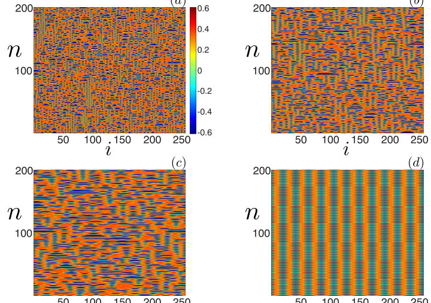
<figcaption class="paper-figure-caption"><b>Fig 1.</b> Fig. 2. Spacetime plots of u(n) i : (a) ξd =1 (nearest-neighbor coupling), (b) ξd =3 (6-neighbor coupling), (c) ξd =6 (12-neighbor coupling), (d) ξd =10 (20-neighbor coupling). To quantify the length scale of the structures shown in Fig. 2, the two-point correlation length ξc has</figcaption>
</figure>
<figure class="paper-figure-card">
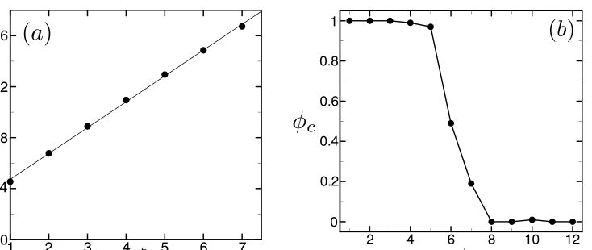
<figcaption class="paper-figure-caption"><b>Fig 2.</b> Fig. 3. (a) The linear variation of the correlation length ξc with the length scale of the spatial coupling ξd. The solid line is the curve-fit ξc =2.70+2.03ξd. (b) The fraction φc of random initial conditions which lead to chaotic dynamics. Each simulation is iterated forward in time for 2 × 106 time steps and 100 simulations were conducted for each value of ξd using different random initial conditions. As ξd is increased, there is a transition from chaotic to periodic dynamics. In Fig. 3(b), we show the fraction of random initial conditions, φc, that yield a lattice with chaotic dynamics as indicated by a positive leading Lyapunov exponent λ1 &gt; 0. Each data symbol is the fraction that has...</figcaption>
</figure>
<figure class="paper-figure-card">
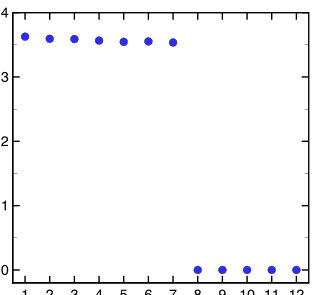
<figcaption class="paper-figure-caption"><b>Fig 3.</b> Fig. 4. The variation of the leading Lyapunov exponent λ1 with the extent of the spatial coupling ξd. λ1 is not affected significantly as the coupling increases to include 14 neighbors (ξd =7). For larger values, ξd ≥8, the dynamics are periodic in time as indicated by the vanishing values of λ1.</figcaption>
</figure>
<figure class="paper-figure-card">
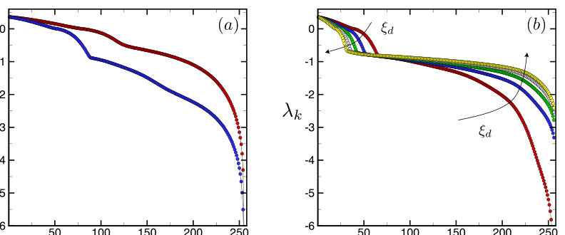
<figcaption class="paper-figure-caption"><b>Fig 4.</b> Fig. 5. Variation of the spectrum of Lyapunov exponents, λk, with the length scale of spatial coupling, ξd, where k is the Lyapunov index. (a) ξd =1 (upper curve, red), ξd =2 (lower curve, blue). (b) Results for 3≤ξd ≤7. The direction of increasing ξd is indicated by the arrows to highlight to opposing trends found for small and large k. exponents increase with increasing values of ξd as indicated by the arrow on the right side of Fig. 5(b). The directions of these two opposing trends are indicated by the arrows which point in the direction of the spectra variation with increasing ξd. Figure 5(b) indicates that the values of the positive Lyapunov exponents (excluding λ1), and a portion of...</figcaption>
</figure>
<figure class="paper-figure-card">
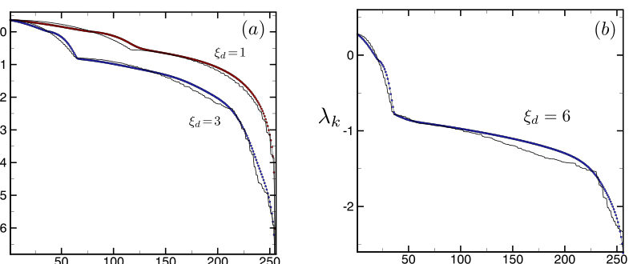
<figcaption class="paper-figure-caption"><b>Fig 5.</b> Fig. 6. A comparison of the computed Lyapunov spectra (symbols) with the theoretical prediction using Eqs. (5)-(6) (solid black lines): (a) ξd =1, ξd =3; (b) ξd =6.</figcaption>
</figure>
</div>

<p><strong>Summary.</strong> This theoretical work analyzes spatiotemporal chaos in coupled map lattices by extending the spatial coupling range. Using Covariant Lyapunov Vectors, the authors predict that the system's dynamics exhibit a distinct transition between two regimes, with the dividing point being directly related to the system's fractal dimension. This provides a powerful, general diagnostic tool for characterizing complex, extended nonlinear systems.</p>
<p><strong>Why it may be interesting.</strong> While focused on classical chaos, the use of advanced spectral tools like CLVs to characterize the structure of chaotic attractors and their scaling properties is highly relevant to understanding non-equilibrium dynamics in quantum many-body systems.</p>
<details>
<summary>Detailed structure</summary>
<p><strong>Main problem.</strong> The paper investigates the chaotic dynamics of large one-dimensional lattices of nonlinear maps as the extent of spatial coupling is increased.</p>
<p><strong>Main result.</strong> The analysis reveals a clear decomposition of the dynamics into two regimes based on the spatial power spectrum of the CLVs, with the separating index corresponding to the system's fractal dimension.</p>
<p><strong>Method.</strong> The study employs Covariant Lyapunov Vectors (CLVs) to theoretically predict the spectral variation of CLVs and the spectrum of Lyapunov exponents, independent of the specific nonlinear mapping function.</p>
<p><strong>Model / system.</strong> The system is a Coupled Map Lattice (CML) defined by a 1D lattice of nonlinear maps, coupled via a spatially extended interaction term. The dynamics are governed by $\vec{u}(n+1) = A_c(\epsilon, \xi_d)\vec{f}(\vec{u}(n))$.</p>
<p><strong>Key observables.</strong> Covariant Lyapunov Vectors (CLVs), Lyapunov exponent spectrum, spatial power spectrum of CLVs, and the fractal dimension of the dynamics.</p>
<p><strong>Important parameters / regimes.</strong> The spatial coupling extent ($\xi_d$) is the primary varying parameter, alongside fixed values for the map parameter ($r=2.8$) and coupling strength ($\epsilon=0.7$).</p>
<p><strong>Assumptions / limitations.</strong> The theoretical approach assumes the spatial coupling is symmetric and that the coupling matrix $A_c$ is sparse and banded.</p>
<p><strong>Figures summary.</strong> Figures illustrate the 1D lattice setup, the evolution of the correlation length ($\xi_c$) and chaotic fraction ($\phi_c$) as $\xi_d$ increases, and the spatial power spectra of the CLVs.</p>
<p><strong>Paper structure.</strong> The paper develops a theoretical framework using CLVs to analyze the spectral properties of the coupled system. It analyzes the spatial power spectrum, deducing a two-regime structure for the CLVs, and relates the transition index to the fractal dimension.</p>
</details>
<details>
<summary>Abstract</summary>
<p>The chaotic dynamics of a large one-dimensional lattice of nonlinear maps with a spatial coupling of increasing extent is explored using the covariant Lyapunov vectors (CLVs). A theoretical approach is developed that predicts the spectral variation of the CLVs and the spectrum of Lyapunov exponents. The theoretical approach is independent of the details of the mapping function and requires only a description of the lattice coupling. The general structure of the spatial power spectrum of the CLVs is determined using only the eigenvectors of the coupling matrix. This yields a decomposition of the CLVs into two regimes. The first regime, corresponding to the largest Lyapunov exponents, contains highly entangled CLVs with significant contributions from large scale spatial structures and aligns with the sorted eigenvectors, which occur in pairs with wavenumbers that increase linearly with their index. The second regime contains significant mixing of length scales with increasing index. The index separating these two regimes is approximately equal to the fractal dimension of the dynamics.</p>
</details>
<p><sub><a href="#top">↑ back to top</a></sub></p>

<p><a id="paper-2609.00729"></a></p>
<h3 id="classifying-coherent-peaks-in-nanoelectronic-devices-by-the-presence-or-absence-of-spin-exchange"><a href="http://arxiv.org/abs/2609.00729v1">Classifying coherent peaks in nanoelectronic devices by the presence or absence of spin exchange</a></h3>
<p><strong>Authors:</strong> Jongbae Hong<br>
<strong>Type:</strong> both · <strong>Category:</strong> strongly correlated electrons · <strong>PDF:</strong> <a href="https://arxiv.org/pdf/2609.00729v1">https://arxiv.org/pdf/2609.00729v1</a><br>
<strong>Analysis basis:</strong> full PDF text, analyzed in chunks
<strong>Topic relevance:</strong> <code>Keldysh / 2PI / non-Gaussian methods</code> <strong>1/5</strong> · <code>methods for driven-dissipative</code> <strong>1/5</strong></p>
<div class="figure-strip-hint">↔ Scroll figures horizontally</div>
<div class="paper-figures-scroll">
<figure class="paper-figure-card">
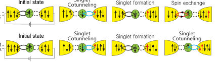
<figcaption class="paper-figure-caption"><b>Fig 1.</b> FIG. 2: Spin dynamics of unidirectional entangled-state tun- neling in a QPC device [13]. Dynamics involving spin ex- change (top) generate the ZBP, whereas dynamics involv- ing only singlet cotunneling (bottom) generate coherent side peaks.</figcaption>
</figure>
<figure class="paper-figure-card">
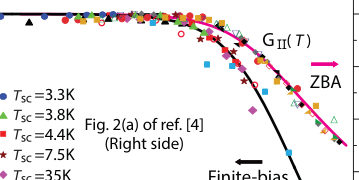
<figcaption class="paper-figure-caption"><b>Fig 2.</b> Fig. 2(a) of ref. [15]</figcaption>
</figure>
<figure class="paper-figure-card">
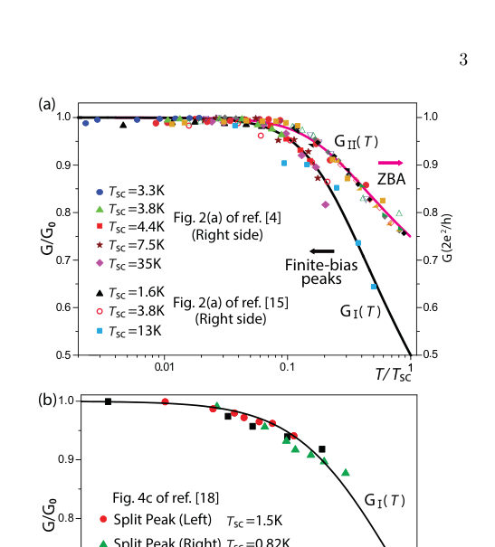
<figcaption class="paper-figure-caption"><b>Fig 3.</b> Fig. 4a of ref. [18]</figcaption>
</figure>
<figure class="paper-figure-card">
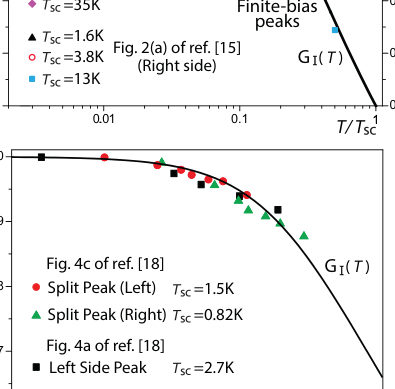
<figcaption class="paper-figure-caption"><b>Fig 4.</b> FIG. 3: (a) Temperature-scaled finite-bias differential- conductance maxima taken from references [4, 18] for various gate voltages collapse onto the scaling function GI(T ). For comparison, the zero-bias anomaly data from the same ref- erences are shown scaled by GII(T ). (b) Temperature-scaled finite-bias peaks observed in the even-particle sector of QD- SETs collapse onto GI(T ). Red dots and green triangles corre- spond to a spin-singlet state in the QD, whereas black squares correspond to a spin-triplet state [23]. The corresponding val- ues of TSC and the data sources are indicated.</figcaption>
</figure>
<figure class="paper-figure-card">
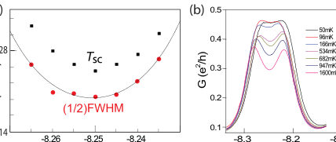
<figcaption class="paper-figure-caption"><b>Fig 5.</b> FIG. 4: (a) Comparison between TSC and (1/2)FWHM for a CNT QDSET as a function of VG, expressed in the same energy units. The TSC data were obtained through scaling analysis, while the (1/2)FWHM data are taken from Fig. 2(d) of reference [27]. (b) Temperature-dependent linear conduc- tance used to determine the TSC values shown in (a).</figcaption>
</figure>
</div>

<p><strong>Summary.</strong> This work classifies coherent conductance peaks in quantum dots and quantum point contacts by analyzing their temperature scaling behavior. The authors distinguish between peaks arising from spin exchange dynamics, characteristic of Kondo physics, and those arising solely from cotunneling. This classification is crucial for understanding the fundamental spin interactions governing transport in mesoscopic quantum devices.</p>
<p><strong>Why it may be interesting.</strong> The clear distinction between spin-exchange (Kondo) and cotunneling mechanisms in transport measurements provides a powerful experimental diagnostic tool for understanding spin interactions in nanoscale quantum conductors.</p>
<details>
<summary>Detailed structure</summary>
<p><strong>Main problem.</strong> The paper classifies coherent peaks in nanoelectronic devices based on whether their underlying spin dynamics are governed by spin exchange (Kondo physics) or purely by cotunneling of spin pairs.</p>
<p><strong>Main result.</strong> Two distinct categories of coherent peaks are identified: one involving spin exchange (seen in QPC/even-particle QDSET ZBPs) and another involving only cotunneling (seen in odd-particle QDSET ZBPs).</p>
<p><strong>Method.</strong> The classification relies on detailed scaling analysis of temperature-dependent differential conductance ($dI/dV$) measurements and theoretical reproduction using Green's function techniques.</p>
<p><strong>Model / system.</strong> The study analyzes Quantum-dot single-electron transistors (QDSETs) and Quantum Point Contacts (QPCs), which model localized spins coupled to metallic leads.</p>
<p><strong>Key observables.</strong> Differential conductance ($dI/dV$), zero-bias peaks (ZBPs), and the scaling temperature ($T_{SC}$) relative to the Kondo temperature ($T_K$).</p>
<p><strong>Important parameters / regimes.</strong> Temperature ($T$), gate voltage ($V_G$), and the ratio of $T_{SC}$ to $rac{1}{2}  ext{FWHM}$.</p>
<p><strong>Assumptions / limitations.</strong> The analysis assumes that the observed physics can be separated into distinct spin dynamics mechanisms (spin exchange vs. cotunneling) and utilizes scaling functions derived from theoretical models.</p>
<p><strong>Figures summary.</strong> Figures illustrate schematic device setups (QDSET/QPC) and compare temperature-scaled conductance data, showing different scaling behaviors for different peak types.</p>
<p><strong>Paper structure.</strong> The paper progresses by defining the physical systems, developing scaling functions for different peak types, and then using theoretical calculations (Green's functions, matrix reduction) to confirm the spin dynamics responsible for the observed conductance features.</p>
</details>
<details>
<summary>Abstract</summary>
<p>Coherent peaks appearing in the differential conductance of quantum-dot single-electron transistors (QDSETs) and quantum point contact (QPC) devices are classified into two categories according to the scaling function onto which the temperature-scaled differential-conductance maxima collapse and the underlying spin dynamics. The zero-bias peaks (ZBPs) observed in QPCs and in the triplet state of the even-particle sector of QDSETs belong to the same category, whereas the ZBP in the odd-particle sector of a QDSET belongs to a different category together with all finite-bias coherent peaks observed in QPCs and in the even-particle sector of QDSETs. The spin dynamics of the former category involve spin exchange, a hallmark of Kondo dynamics, whereas those of the latter category involve only cotunneling of an up--down spin pair. Furthermore, for the former type of ZBP, the scaling temperature coincides with one-half of the full width at half maximum (FWHM), which corresponds to the Kondo temperature. In contrast, for the latter type, the scaling temperature does not coincide with the (1/2)FWHM-derived energy scale. To support these findings, the gate-voltage-dependent differential-conductance line shapes measured in the odd-particle sector of a QDSET are theoretically reproduced. The results demonstrate that the observed ZBP is a merging of two coherent side peaks generated solely by the cotunneling of up--down spin pairs.</p>
</details>
<p><sub><a href="#top">↑ back to top</a></sub></p>

<p><a id="paper-2609.01312"></a></p>
<h3 id="inversion-symmetric-topological-insulators-in-cut-and-project-binary-chains"><a href="http://arxiv.org/abs/2609.01312v1">Inversion-symmetric topological insulators in cut-and-project binary chains</a></h3>
<p><strong>Authors:</strong> Zhipeng Zeng, Yuge Chen, Jean-Noël Fuchs, Jianxin Zhong, Rémy Mosseri<br>
<strong>Type:</strong> theory · <strong>Category:</strong> other · <strong>PDF:</strong> <a href="https://arxiv.org/pdf/2609.01312v1">https://arxiv.org/pdf/2609.01312v1</a><br>
<strong>Analysis basis:</strong> full PDF text, analyzed in chunks
<strong>Topic relevance:</strong> <code>Frenkel-Kontorova</code> <strong>1/5</strong> · <code>analog quantum simulation</code> <strong>1/5</strong></p>
<div class="figure-strip-hint">↔ Scroll figures horizontally</div>
<div class="paper-figures-scroll">
<figure class="paper-figure-card">
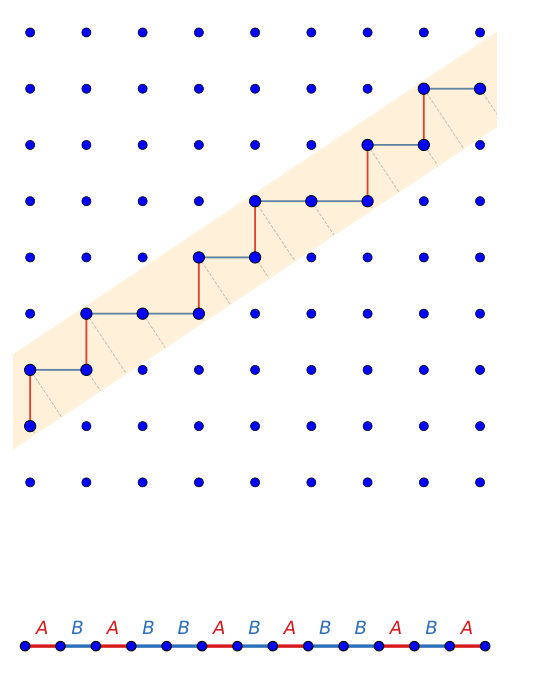
<figcaption class="paper-figure-caption"><b>Fig 1.</b> FIG. 1. Schematic of the cut-and-projection construc- tion.Top: The yellow strip region (the &quot;acceptance zone) with width W and slope α = 2/3 selects points in the Z2 lattice, and edges connecting these points (noted A for the vertical edges and B for horizontal edges). This set of selected points is usually projected onto the physical space E∥along the dot- ted lines, leading to projected edges of different length. Bot- tom: In the present work, the selected points in the strip are instead projected onto a line of slope unity, leading to A, B bonds of equal length.</figcaption>
</figure>
<figure class="paper-figure-card">
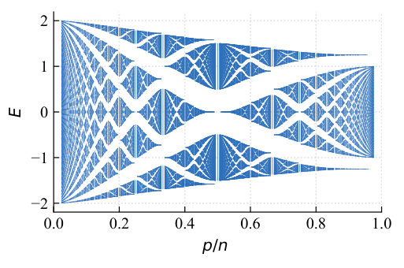
<figcaption class="paper-figure-caption"><b>Fig 2.</b> FIG. 2. CP butterfly for the binary tight-binding chains. For each rational slope α = p/q, the unit cell contains n = p + q sites and the spectrum contains n bands. The spectrum support is plotted against the rescaled CP slope θ = p/n, for hopping amplitudes tB = 1 and tA = 0.5. This diagram displays a rich hierarchical structure.</figcaption>
</figure>
<figure class="paper-figure-card">
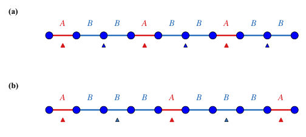
<figcaption class="paper-figure-caption"><b>Fig 3.</b> FIG. 3. Wannier-center configurations for odd and even chains. (a) α = 1/2 ABB chain: Wanniers centers sit either at a site (shared by two B bonds) or at a bond center (here an A bond); (b) α = 1/3 ABBB chain: the Wannier centers remain bond-centered in both insulating regimes, but occupy different inversion-symmetric positions (here a A bond or a B bond centers).</figcaption>
</figure>
<figure class="paper-figure-card">
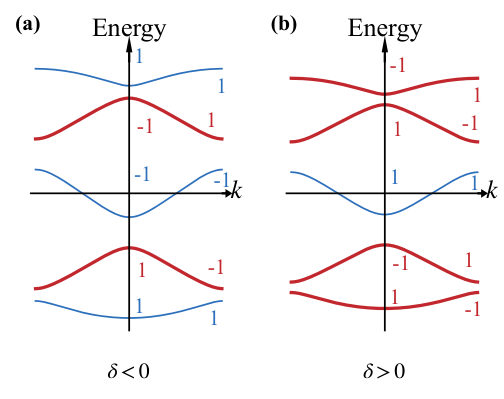
<figcaption class="paper-figure-caption"><b>Fig 4.</b> FIG. 4. Band structures for the chain corresponding to p/q = 2/3. The hopping amplitudes are tA = 1+δ and tB = 1−δ (a) δ &lt; 0 and (b) δ &gt; 0. The numbers ±1 at the high-symmetry points k = 0 and k = π label the inversion eigenvalues of each band. For bands coloured red, the product of inversion eigenvalues is ξk=0ξk=π = −1, corresponding to a Zak phase of π; for bands coloured blue, the product is +1,corresponding to a Zak phase of 0. The gaps close at δ = 0.</figcaption>
</figure>
<figure class="paper-figure-card">
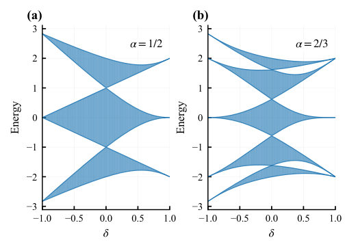
<figcaption class="paper-figure-caption"><b>Fig 5.</b> FIG. 5. Band structure of two odd n cases : α = 1/2, ABB (a) and α = 2/3, ABABB (b), plotted as a function of δ, with tB = 1 −δ and tA = 1 + δ. At δ = 0 the gaps close.</figcaption>
</figure>
</div>

<p><strong>Summary.</strong> This work analyzes topological insulators in 1D chains created via the cut-and-project method, which imposes inversion symmetry. The authors establish a precise mathematical criterion—related to the ratio $n/\gcd(M,n)$—that dictates whether a topological transition occurs between different insulating phases. This provides a deep theoretical understanding of how lattice geometry and band filling control topological behavior.</p>
<p><strong>Why it may be interesting.</strong> The rigorous connection between the topological invariants (polarization jumps) and simple arithmetic properties ($n/\gcd(M,n)$ parity) provides a powerful, model-independent tool for classifying topological phases in engineered quantum materials.</p>
<details>
<summary>Detailed structure</summary>
<p><strong>Main problem.</strong> The paper investigates the electronic properties and topological transitions in inversion-symmetric topological insulators constructed using the cut-and-project method for binary chains.</p>
<p><strong>Main result.</strong> Topological transitions are strictly governed by an arithmetic criterion: they occur if and only if $n/\gcd(M,n)$ is odd, with specific exceptions noted for even values.</p>
<p><strong>Method.</strong> The analysis employs tight-binding models derived from the cut-and-project method, utilizing symmetry constraints (inversion symmetry) and topological diagnostics like the Zak phase and polarization.</p>
<p><strong>Model / system.</strong> The system is a one-dimensional periodic chain with a binary hopping structure ($t_A, t_B$), generated by projecting a 2D lattice structure ($\mathbb{Z}^2$) via the cut-and-project method for rational slopes $\alpha=p/q$.</p>
<p><strong>Key observables.</strong> Electric polarization ($P$), topological transition points, and the energy spectrum visualized as a "Cut-and-Project butterfly".</p>
<p><strong>Important parameters / regimes.</strong> The hopping ratio $t_A/t_B$, the number of sites $n=p+q$, and the number of filled bands $M$.</p>
<p><strong>Assumptions / limitations.</strong> The analysis is restricted to rational slopes $\alpha = p/q$, and the model assumes spinless electrons with a single orbital per site.</p>
<p><strong>Figures summary.</strong> Figures illustrate the schematic of the CP construction, the "CP butterfly" spectrum vs. rescaled slope, and plots showing polarization jumps confirming the arithmetic criterion.</p>
<p><strong>Paper structure.</strong> The paper builds from defining the CP model and its inherent symmetry, establishing the Hamiltonian and spectral features, and then deriving the necessary and sufficient conditions for topological transitions based on the periodicity parameters $n$ and $M$.</p>
</details>
<details>
<summary>Abstract</summary>
<p>We investigate the electronic properties of binary tight-binding chains generated by the cut-and-project method for rational slopes $α=p/q$, leading to periodic and inversion symmetric chains with $n=p+q$ sites. The binary structure is encoded in two hopping amplitudes $t_a$ and $t_b$. For fixed $t_a \neq t_b$, the support of the energy spectrum as a function of $p/n$ gives rise to a "Cut-and-Project butterfly". We concentrate on insulators with $M$ filled bands among a total of $n$ bands and vary $t_a/t_b$. Inversion symmetry constrains the electric polarization $P$ to $0$ or $P_q/2$ modulo a polarization quantum $P_q = \gcd(M,n)/n$. A topological transition, between two insulators that differ by their quantized polarization, occurs if and only if $n/\gcd(M,n)$ is odd. When $n/\gcd(M,n)$ is even, the two insulating regimes have a vanishing polarization and no topological transition occurs, despite the gap closing at $t_a=t_b$. When $n$ is even and $M$ odd, we find an adiabatic path between $t_a>t_b$ and $t_a<t_b$ that maintains inversion symmetry and a gap.</p>
</details>
<p><sub><a href="#top">↑ back to top</a></sub></p>

<p><a id="paper-2609.01160"></a></p>
<h3 id="layer-selective-and-magnetic-field-enhanced-transport-of-topological-kink-states-in-rhombohedral-multilayer-graphene"><a href="http://arxiv.org/abs/2609.01160v1">Layer-selective and magnetic-field-enhanced transport of topological kink states in rhombohedral multilayer graphene</a></h3>
<p><strong>Authors:</strong> Chengyu Shen, Zhe Hou<br>
<strong>Type:</strong> theory · <strong>Category:</strong> other · <strong>PDF:</strong> <a href="https://arxiv.org/pdf/2609.01160v1">https://arxiv.org/pdf/2609.01160v1</a><br>
<strong>Analysis basis:</strong> full PDF text, analyzed in chunks
<strong>Topic relevance:</strong> <code>analog quantum simulation</code> <strong>1/5</strong></p>
<div class="figure-strip-hint">↔ Scroll figures horizontally</div>
<div class="paper-figures-scroll">
<figure class="paper-figure-card">
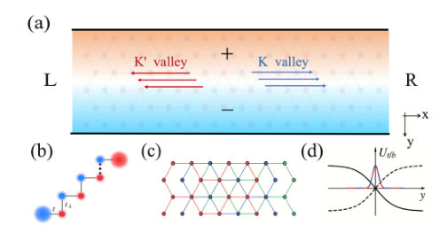
<figcaption class="paper-figure-caption"><b>Fig 1.</b> FIG. 1. (a) Schematic of the rhombohedral multilayer graphene (RMG) transport device, with the inter-layer bias inversion (shown with the ± sign), electrodes (L/R), and valley-polarized VKSs labelled. (b) Side-view of the atomic structure of RMG, showing the layer-polarized distribution of wavefunctions of the VKSs, with red (blue) colors on sublat- tice A(B). The shadows denote the amplitude of wave func- tions of VKSs. (c) Schematic of an ABC-stacked trilayer graphene nanoribbon, where the three layers are distinguished by different colors. (d) Electrostatic potential Ut/b for the top(bottom)-most layer, as functions of the transverse coor- dinate y, showing in a solid (dashed) curve. The...</figcaption>
</figure>
<figure class="paper-figure-card">
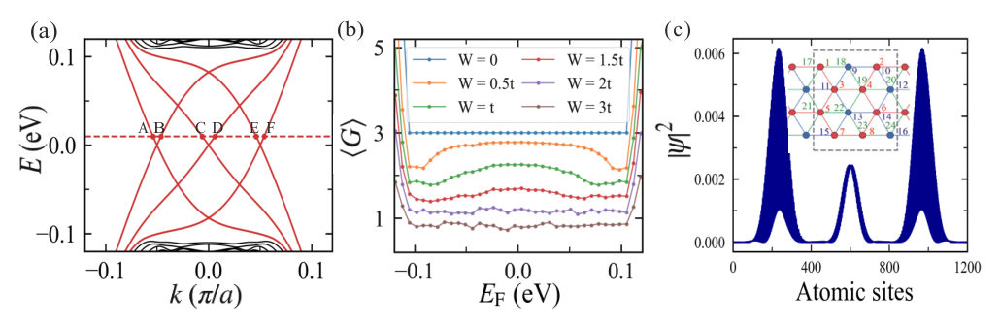
<figcaption class="paper-figure-caption"><b>Fig 2.</b> FIG. 2. (a) Band structure of the trilayer graphene nanoribbon hosting the VKSs (shown in red curves). The nanoribbon width is N = 100. (b) Conductance ⟨G⟩as a function of the Fermi energy EF at different disorder strengths W. Here disorder exists in all-layers. (c) Wave function distributions of the VKSs, corresponding to point A in panel (a), where the Fermi energy EF = 0.01 eV. The inset shows the unit-cell of the nanoribbon of N = 2, with the number denoting the indices of the atomic sites.</figcaption>
</figure>
<figure class="paper-figure-card">
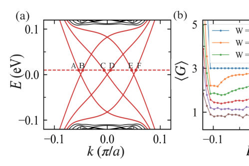
<figcaption class="paper-figure-caption"><b>Fig 3.</b> Figure 2(a) shows the band structure of a clean rhom- bohedral trilayer graphene nanoribbon. Three pairs of counter-propagating VKSs are identified (see the red curves), in accordance with layer layer number [see Eq. (3)]. The K(K′) valley VKSs have positive (neg- ative) slopes in Fig. 2(a), propagating rightward (left- ward). Figure 2(b) shows the two-terminal conductance G of the system. In the absence of disorder (W = 0), the conductance exhibits integer values in units of G0 as a result of the ballistic transport in the central region. For energies within the bulk gap (|E| &lt; 0.1 eV), a quantized conductance plateau with value of 3G0 is observed, con- tributed from the three-pairs of...</figcaption>
</figure>
<figure class="paper-figure-card">
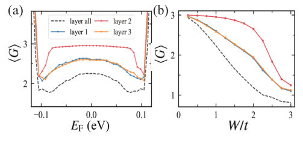
<figcaption class="paper-figure-caption"><b>Fig 4.</b> FIG. 3. ⟨G⟩as a function of EF at a fixed disorder strength W = t in (a), and as a function of W at a fixed Fermi energy EF = 0.01 eV in (b). The four different curves correspond to disorder being introduced to all layers, or exclusively to layer 1, 2, and 3.</figcaption>
</figure>
<figure class="paper-figure-card">
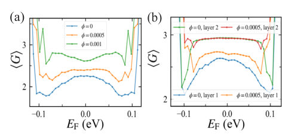
<figcaption class="paper-figure-caption"><b>Fig 5.</b> FIG. 4. ⟨G⟩as a function of EF at a fixed disorder strength W = t in the absence (ϕ = 0) and presence of a magnetic field for trilayer graphene. For (a) the disorder is applied to all layers, and for (b) the disorder is applied exclusively to layer-1 (the top-most layer) or layer-2 (the middle layer).</figcaption>
</figure>
</div>

<p><strong>Summary.</strong> This work theoretically examines how topological valley kink states behave in multilayer graphene under disorder and a magnetic field. The key finding is that applying a perpendicular magnetic field breaks symmetry, which effectively suppresses backscattering between opposite valleys. This demonstrates that magnetic fields and disorder engineering are powerful tools for controlling topological transport in graphene nanostructures.</p>
<p><strong>Why it may be interesting.</strong> The control mechanisms identified—layer-selective disorder and magnetic fields—provide concrete, tunable knobs for manipulating topological edge state transport, which is relevant for designing robust quantum interconnects or novel electronic devices.</p>
<details>
<summary>Detailed structure</summary>
<p><strong>Main problem.</strong> The study investigates the quantum transport of Topological Valley Kink States (VKSs) in rhombohedral multilayer graphene (RMG) when subjected to Anderson disorder and a perpendicular magnetic field.</p>
<p><strong>Main result.</strong> The perpendicular magnetic field breaks layer symmetry, suppressing intervalley backscattering and significantly enhancing the transmission of VKSs through disordered regions. Furthermore, the transport is highly sensitive to the layer-selective distribution of disorder.</p>
<p><strong>Method.</strong> The analysis employs numerical Landauer-Büttiker conductance calculations based on a tight-binding model Hamiltonian, supplemented by low-energy continuum descriptions for topological invariants.</p>
<p><strong>Model / system.</strong> The system is ABC-stacked rhombohedral multilayer graphene (RMG) modeled by a tight-binding Hamiltonian incorporating nearest-neighbor hopping, layer-dependent electrostatic potentials, and disorder terms. The perpendicular magnetic field is included via the Peierls substitution.</p>
<p><strong>Key observables.</strong> Conductance ($\langle G 
angle$), wave function localization, intervalley scattering suppression, and the valley Chern number ($C_{\xi}$).</p>
<p><strong>Important parameters / regimes.</strong> Perpendicular magnetic field strength ($\mathbf{B}_{\perp}$), disorder strength/distribution, and the number of graphene layers ($N$).</p>
<p><strong>Assumptions / limitations.</strong> The analysis assumes an armchair edge termination for the ribbon geometry and utilizes low-energy continuum descriptions near the Dirac points.</p>
<p><strong>Figures summary.</strong> Figures illustrate the schematic transport device, layer-polarized wave function distributions, band structures showing VKSs, and conductance measurements comparing results with and without a magnetic field.</p>
<p><strong>Paper structure.</strong> The paper first establishes the model for VKSs in RMG, then analyzes the transport behavior in the absence of a magnetic field (showing layer polarization), and finally details how the perpendicular magnetic field breaks symmetry to enhance transport by suppressing intervalley scattering.</p>
</details>
<details>
<summary>Abstract</summary>
<p>Topological valley kink states (VKSs), which are quantum valley Hall states emerging at the interfaces between adjacent domains with opposite valley Chern numbers, have attracted considerable interest in graphene-based systems. In this work, we investigate the quantum transport of VKSs in ABC-stacked rhombohedral multilayer graphene in the presence of Anderson disorder and a perpendicular magnetic field. Two prominent transport characteristics are revealed. First, in the absence of a magnetic field, the kink states exhibit strong layer polarization, with their wave functions predominantly localized and equally distributed on the outermost top and bottom layers. As a result, their transport properties are highly sensitive to the layer-selective disorder distribution. Second, under a perpendicular magnetic field, the layer-symmetric spatial distribution of VKSs is broken, leading to a significant reduction in the wave-function overlap between counter-propagating VKSs from opposite valleys. Consequently, intervalley scattering is suppressed, and the transmission of VKSs through disordered regions is substantially enhanced. Our results provide new insights into multichannel topological valley transport in rhombohedral multilayer graphene and demonstrates disorder-engineering and magnetic fields as effective approaches for manipulating the propagation of VKSs.</p>
</details>
<p><sub><a href="#top">↑ back to top</a></sub></p>

<p><a id="paper-2609.00695"></a></p>
<h3 id="narrow-sense-type-iii-dirac-cones-and-additional-flat-lines-on-a-honeycomb-lattice-with-anisotropic-next-nearest-neighbor-hoppings"><a href="http://arxiv.org/abs/2609.00695v1">Narrow-Sense Type-III Dirac Cones and Additional Flat Lines on a Honeycomb Lattice with Anisotropic Next-Nearest-Neighbor Hoppings</a></h3>
<p><strong>Authors:</strong> Keita Kishigi, Yasumasa Hasegawa<br>
<strong>Type:</strong> theory · <strong>Category:</strong> other · <strong>PDF:</strong> <a href="https://arxiv.org/pdf/2609.00695v1">https://arxiv.org/pdf/2609.00695v1</a><br>
<strong>Analysis basis:</strong> full PDF text, analyzed in chunks
<strong>Topic relevance:</strong> <code>analog quantum simulation</code> <strong>1/5</strong></p>
<div class="figure-strip-hint">↔ Scroll figures horizontally</div>
<div class="paper-figures-scroll">
<figure class="paper-figure-card">

<figcaption class="paper-figure-caption"><b>Fig 1.</b> FIG. 2: (color online). Honeycomb lattice and transfer integrals. Filled circles (•) and open circles (◦) denote sites of the A and B sublattices, respectively. The nearest-neighbor and next-nearest- neighbor transfer integrals are denoted by ta, tb, and tc and t2a, t2b, and t2c, respectively. In this study, we consider ta = tb = tc = t and the anisotropic case t2a = 0 with t2b = t2c = t′.</figcaption>
</figure>
<figure class="paper-figure-card">
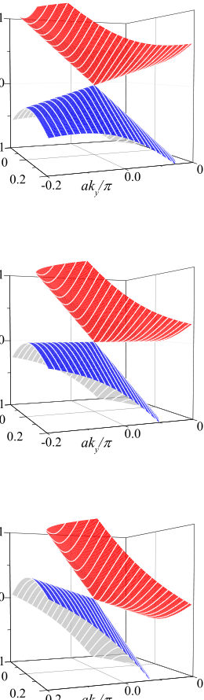
<figcaption class="paper-figure-caption"><b>Fig 2.</b> FIG. 1: (Color online) The energy bands of 2D type-I (a), narrow- sense type-III (b), and type-II (c) Dirac, which are described by Eq. (1), where ˜ε = a(ε(±, kx, ky) −˜εF)/(ℏvF) and a represents the lattice constant. The tilting is classified as type-I for |α/(ℏvF)| &lt; 1, narrow- sense type-III for |α/(ℏvF)| = 1, and type-II for |α/(ℏvF)| &gt; 1. We take α/(ℏvF) = −0.5 for (a), α/(ℏvF) = −1 for (b), and α/(ℏvF) = −1.5 for (c).</figcaption>
</figure>
<figure class="paper-figure-card">
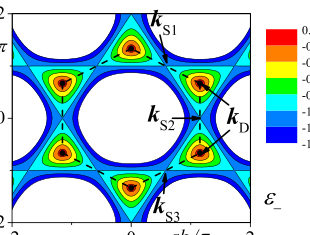
<figcaption class="paper-figure-caption"><b>Fig 3.</b> FIG. 3: (Color online) The upper and lower energy bands (ε+ and ε−) for t′/t = 0 (a) and contour plots of an upper band (b) and a lower band (c), where the boundary of the first Brillouin zone are shown by dotted black lines.</figcaption>
</figure>
<figure class="paper-figure-card">

<figcaption class="paper-figure-caption"><b>Fig 4.</b> FIG. 4: (Color online) The upper and lower energy bands (ε+ and ε−) for t′/t = 0.4 (type-I) (a), t′/t = 0.5 (narrow-sense type-III) (b), and t′/t = 0.6 (type-II) (c) when t2a = 0.</figcaption>
</figure>
<figure class="paper-figure-card">

<figcaption class="paper-figure-caption"><b>Fig 5.</b> FIG. 5: (Color online) At fixed kx = 2π/( √</figcaption>
</figure>
</div>

<p><strong>Summary.</strong> This theoretical work analyzes a honeycomb lattice model to show how anisotropic hopping can generate narrow-sense Type-III Dirac cones. Crucially, the model also predicts additional flat energy lines at the critical point, which leads to a pronounced enhancement of the electronic density of states and specific heat compared to ideal Dirac cone predictions.</p>
<p><strong>Why it may be interesting.</strong> The finding that geometric features (flat lines) can dramatically enhance thermodynamic responses (specific heat) near a critical point is a general concept relevant to understanding quantum criticality in various condensed matter systems.</p>
<details>
<summary>Detailed structure</summary>
<p><strong>Main problem.</strong> The study investigates the realization of narrow-sense Type-III Dirac cones and the emergence of additional flat lines in the band structure of a honeycomb lattice.</p>
<p><strong>Main result.</strong> The model demonstrates that anisotropic next-nearest-neighbor hoppings can induce narrow-sense Type-III Dirac cones, and the co-existence of these cones with additional flat lines significantly enhances the density of states and electronic specific heat.</p>
<p><strong>Method.</strong> The analysis employs a tight-binding model approach, calculating the energy dispersion, density of states (DOS), and electronic specific heat ($C$) by tuning the hopping anisotropy ratio.</p>
<p><strong>Model / system.</strong> The system is a single-orbital honeycomb lattice described by a tight-binding Hamiltonian incorporating nearest-neighbor and anisotropic next-nearest-neighbor hopping terms. The electronic properties are analyzed across Type-I, narrow-sense Type-III, and Type-II Dirac cone regimes.</p>
<p><strong>Key observables.</strong> Dirac cone type (I, III, II), Density of States (DOS), Electronic Specific Heat ($C$), and the existence/energy of additional flat lines.</p>
<p><strong>Important parameters / regimes.</strong> The ratio of anisotropic next-nearest-neighbor hopping to nearest-neighbor hopping ($t'/t$), particularly around the critical point $t'/t = 0.5$.</p>
<p><strong>Assumptions / limitations.</strong> The analysis relies on a single-orbital tight-binding model approximation for the electronic structure.</p>
<p><strong>Figures summary.</strong> Figures illustrate the energy bands for different cone types, the dependence of the DOS and specific heat on the anisotropy ratio, and the local character of energy extrema (saddle points) at high-symmetry points.</p>
<p><strong>Paper structure.</strong> The paper systematically analyzes the Hamiltonian, first establishing the realization of Type-III cones, then detailing the appearance of additional flat lines at the critical point, and finally quantifying the resulting enhancement in thermodynamic properties like the specific heat.</p>
</details>
<details>
<summary>Abstract</summary>
<p>Critically tilted Dirac cones have attracted considerable attention because of their unconventional electronic properties in two-dimensional massless Dirac-fermion systems. Among them, the narrow-sense type-III Dirac cone is characterized by a flat dispersion along the direction connecting the two Dirac points.   Using a tight-binding model on a single-orbital honeycomb lattice, we demonstrate that narrow-sense type-III Dirac cones can be realized by tuning anisotropic next-nearest-neighbor hoppings. Type-I and type-II Dirac cones emerge on either side of the critical point, enabling a systematic investigation of the electronic properties across the type-I, narrow-sense type-III, and type-II regimes.   We further find that the present model exhibits additional flat lines in momentum space whose energy coincides with the Dirac-point energy at the narrow-sense type-III critical point. This band structure produces a pronounced enhancement of the density of states at the Fermi energy and, consequently, a substantial enhancement of the electronic specific heat compared with that expected for an ideal narrow-sense type-III Dirac cone. Our results show that the honeycomb lattice with anisotropic next-nearest-neighbor hoppings provides a simple platform for exploring unconventional thermodynamic properties arising from the energy coincidence of narrow-sense type-III Dirac cones and additional flat lines at the Fermi energy.</p>
</details>
<p><sub><a href="#top">↑ back to top</a></sub></p>
<h3 id="other-secondary-papers-5">Other secondary papers (5)</h3>
<details>
<summary>Show other secondary papers</summary>

<p><a id="paper-2609.00784"></a></p>
<h3 id="anti-higher-order-weyl-semimetal"><a href="http://arxiv.org/abs/2609.00784v1">Anti-higher-order Weyl semimetal</a></h3>
<p><strong>Authors:</strong> Cheng-Ming Miao, Yu-Hao Wan, Qing-Feng Sun<br>
<strong>Type:</strong> theory · <strong>Category:</strong> other · <strong>PDF:</strong> <a href="https://arxiv.org/pdf/2609.00784v1">https://arxiv.org/pdf/2609.00784v1</a><br>
<strong>Analysis basis:</strong> full PDF text, analyzed in chunks</p>
<div class="figure-strip-hint">↔ Scroll figures horizontally</div>
<div class="paper-figures-scroll">
<figure class="paper-figure-card">

<figcaption class="paper-figure-caption"><b>Fig 1.</b> FIG. 1. (a) Schematic of a 3D HOWSM (left) and its kz = 0 slice on the x −y plane, showing a 2D HOTI phase (right). Orange spheres denote Weyl points separating the Brillouin zone into QAHI and HOTI regions. Red lines and ellipses indicate hinge and corner states. (b) Schematic of an anti- HOWSM (left) and its kz = 0 slice on the x −y plane, show- ing a 2D anti-HOTI phase (right). Orange spheres denote Weyl points separating QAHI and anti-HOTI regions. Blue incomplete surfaces and broken circles indicate the absence of hinge/corner states, corresponding to anti-hinge and anti- corner states.</figcaption>
</figure>
<figure class="paper-figure-card">

<figcaption class="paper-figure-caption"><b>Fig 2.</b> FIG. 3. (a) Energy spectra of ribbons versus ky, with eigen- states color-coded by their position ⟨x/Lx −1/2⟩to distin- guish bulk states and surface (anti-hinge) states. (b) Energy spectra of ribbons versus kx, with eigenstates color-coded by ⟨y/Ly −1/2⟩to distinguish bulk states and surface (anti- hinge) states. The width of ribbon is chosen as L = 100. Other parameters are the same as those in Fig. 2.</figcaption>
</figure>
<figure class="paper-figure-card">

<figcaption class="paper-figure-caption"><b>Fig 3.</b> FIG. 2. (a) The vector plot of the Berry curvature in momen- tum space, with only vectors of large magnitude shown. Red (blue) arrows indicate outward (inward) Berry-curvature flow, corresponding to Weyl points with positive (negative) chiral- ity. (b) The slice Chern number C versus kz. (c,d) Numerical energy levels of a finite-sized circular system with different wave vectors kz = 0.8π for (c) and kz = 0.2π for (d). Bulk, edge, and anti-corner states are shown in black, red, and blue, respectively. Insets display the cumulative density of states for all edge states in Panel (c) or anti-corner states in Panel (d), where the radius of each colored circle is proportional to the cumulative...</figcaption>
</figure>
<figure class="paper-figure-card">

<figcaption class="paper-figure-caption"><b>Fig 4.</b> FIG. 4. (a,b) Spin-texture maps for representative 2D slices in the QAHI phase at kz = 0.8π and the anti-HOTI phase at kz = 0.2π, respectively. The color scale represents the out-of-plane component dz, with the purple contour indicat- ing the BIS (dz = 0). Arrows denote the in-plane components (dx, dy). (c,d) Phase diagram as a function of the wave vector kz and the proportional parameter λ or mass parameter m. Gray regions correspond to topologically trivial phases. The red (blue) regions indicate QAHI phases, where the BIS en- closes a single high-symmetry point with positive (negative) chirality. Cyan regions mark the anti-HOTI phase, where the BIS simultaneously encloses two distinct...</figcaption>
</figure>
</div>
<p><strong>Summary.</strong> This paper introduces the anti-higher-order Weyl semimetal (anti-HOWSM), a novel topological phase characterized by the systematic suppression of boundary states, leading to an 'anti-hinge' response. Using a minimal two-band model, the authors demonstrate that this phase is topologically distinct from conventional higher-order semimetals by analyzing boundary state localization via Berry curvature and the Band Inversion Surface.</p>
<p><strong>Why it may be interesting.</strong> This work extends the understanding of topological boundary physics beyond standard surface or hinge states, proposing a mechanism for engineered directional transport blocking, which is relevant for designing novel quantum devices.</p>
<details>
<summary>Detailed structure</summary>
<p><strong>Main problem.</strong> The paper introduces and characterizes the anti-higher-order Weyl semimetal (anti-HOWSM) phase, a topological state where the conventional boundary hierarchy is reversed compared to standard higher-order topological insulators.</p>
<p><strong>Main result.</strong> The anti-HOWSM realizes an anti-hinge response, meaning the bulk topology forces boundary states to selectively vanish at specific crystalline orientations, establishing a dual counterpart to conventional higher-order topology.</p>
<p><strong>Method.</strong> The authors use a minimal two-band model Hamiltonian and employ techniques like calculating Berry curvature, slice Chern numbers, and analyzing the Band Inversion Surface (BIS) winding charge to diagnose the topological phase.</p>
<p><strong>Model / system.</strong> The system is modeled using a minimal two-band Hamiltonian $H(\mathbf{k}) = d(\mathbf{k}) \cdot \sigma$, which is analyzed in the context of 3D Weyl semimetals, often simulated on nanoribbons or nanoflakes.</p>
<p><strong>Key observables.</strong> Anti-hinge states, anti-Fermi arcs, quantized jump of the slice Chern number, and the BIS enclosing multiple high-symmetry points with opposite topological charges.</p>
<p><strong>Important parameters / regimes.</strong> The anisotropy parameter $\lambda$, the momentum coordinates ($\mathbf{k}$), and the topological charges associated with the BIS.</p>
<p><strong>Assumptions / limitations.</strong> The analysis relies on the comparison between conventional HOWSM, the anti-HOWSM, and the use of BIS winding charge alongside slice Chern numbers for complete characterization.</p>
<p><strong>Figures summary.</strong> Figures illustrate energy spectra for nanoribbons comparing QAHI (chiral states) to anti-HOTI (anti-corner states), and phase diagrams showing the transition between trivial, QAHI, and anti-HOTI regions based on system parameters.</p>
<p><strong>Paper structure.</strong> The paper systematically compares the boundary physics of conventional higher-order Weyl semimetals (HOWSM) with the proposed anti-HOWSM, using Hamiltonian analysis, topological invariant calculations (Chern numbers, BIS), and numerical simulations on finite geometries to demonstrate the anti-hinge response.</p>
</details>
<details>
<summary>Abstract</summary>
<p>Higher-order topology extends the bulk-boundary correspondence by enabling corner or hinge localized states. Here we identify an anti-higher-order Weyl semimetal, a three dimensional topological phase in which the conventional boundary hierarchy is reversed. Unlike conventional higher-order Weyl semimetals where bulk topology enforces hinge Fermi arcs, this phase hosts anti-hinge states, meaning the bulk topology forces states to vanish at specific hinge orientations. Using a minimal two-band model, we show how Weyl points separate the Brillouin zone into quantum anomalous Hall and anti-higher-order topological insulating regions, with the latter characterized by a band-inversion surface enclosing two distinct high-symmetry points carrying opposite topological charges. Analytical solutions for Weyl points, Berry curvature monopoles, and slice Chern numbers are derived, with numerical simulations confirming the resulting anti-hinge behavior. Our work establishes anti-higher-order topology as a dual counterpart to conventional higher-order phenomena, further extending the exploration of topological phases.</p>
</details>
<p><sub><a href="#top">↑ back to top</a></sub></p>

<p><a id="paper-2609.00467"></a></p>
<h3 id="comment-on-distinct-behaviors-of-inner-and-outer-cuomath994math-planes-in-quadruple-layer-cuprate-cucbamath995mathcamath996mathcumath997mathomath998math"><a href="http://arxiv.org/abs/2609.00467v1">Comment on "Distinct Behaviors of Inner and Outer CuO$_2$ Planes in Quadruple-Layer Cuprate (Cu,C)Ba$_2$Ca$_3$Cu$_4$O$_{11 + δ}$"</a></h3>
<p><strong>Authors:</strong> Jeffery L. Tallon<br>
<strong>Type:</strong> both · <strong>Category:</strong> strongly correlated electrons · <strong>PDF:</strong> <a href="https://arxiv.org/pdf/2609.00467v1">https://arxiv.org/pdf/2609.00467v1</a><br>
<strong>Analysis basis:</strong> full PDF text, analyzed in chunks</p>
<div class="figure-strip-hint">↔ Scroll figures horizontally</div>
<div class="paper-figures-scroll">
<figure class="paper-figure-card">

<figcaption class="paper-figure-caption"><b>Fig 1.</b> Low-resolution page preview, page 1</figcaption>
</figure>
</div>
<p><strong>Summary.</strong> This work analyzes the two-gap superconductivity in a quadruple-layer cuprate, suggesting that the inner and outer $   ext{CuO}_2$ planes act as largely decoupled superconductors. The key finding is that the critical temperatures for both gaps correlate strongly with the local structural parameter, the Bond-Valence Sum ($V^+$), implying that pairing is governed by short-range, local electronic structure rather than bulk properties.</p>
<p><strong>Why it may be interesting.</strong> The concept of two distinct, locally governed superconducting gaps in a single material provides a concrete example of emergent, multi-component superconductivity, which has parallels in understanding complex, multi-band correlated superconductors.</p>
<details>
<summary>Detailed structure</summary>
<p><strong>Main problem.</strong> The paper investigates the distinct superconducting pairing mechanisms and critical temperatures in the quadruple-layer cuprate $ ext{(Cu,C)} ext{Ba}<em 11_delta="11+\delta">2   ext{Ca}_3   ext{Cu}_4   ext{O}</em>_2$ planes.}$ by analyzing the separate superconducting gaps in the inner and outer $ ext{CuO</p>
<p><strong>Main result.</strong> The observed two-gap superconductivity suggests two largely decoupled superconducting planes, each governed by its local crystal structure, as evidenced by the consistency of $T_{c2}$ with the Bond-Valence Sum parameter ($V^+$) calculated locally.</p>
<p><strong>Method.</strong> The analysis combines photoemission spectroscopy results (revealing two gaps) with structural calculations using the Bond-Valence Sum ($V^+$) parameter derived from crystallographic bond lengths.</p>
<p><strong>Model / system.</strong> The physical system is the quadruple-layer cuprate $    ext{(Cu,C)} ext{Ba}<em 11_delta="11+\delta">2   ext{Ca}_3   ext{Cu}_4   ext{O}</em>_2$ planes (Inner and Outer). The underlying physics is modeled by analyzing the superconducting gaps and their dependence on local structural parameters.}$, which exhibits superconductivity in two distinct $ ext{CuO</p>
<p><strong>Key observables.</strong> Two superconducting gaps ($    ext{IP}$ and $  ext{OP}$), bulk critical temperature ($T_c$), second gap-opening temperature ($T_{c2}$), and the Bond-Valence Sum parameter ($V^+$).</p>
<p><strong>Important parameters / regimes.</strong> Doping levels ($p$): $ ext{IP}$ ($eta$-band) is heavily underdoped ($p \approx 0.07$); $    ext{OP}$ ($\alpha_2$ band) is strongly overdoped ($p \approx 0.25$).</p>
<p><strong>Assumptions / limitations.</strong> The primary assumption is that the superconducting pairing temperatures are determined by the local nearest-neighbor structure, quantified by the $V^+$ parameter, suggesting weak coupling between the planes.</p>
<p><strong>Figures summary.</strong> Figure 1 plots the maximum critical temperature ($T_{c,	ext{max}}$) against the Bond-Valence Sum parameter ($V^+$) for various cuprates, including specific data points for $T_c$ and $T_{c2}$ versus $V^+(	ext{IP})$ and $V^+(	ext{OP})$ for $ ext{CuC-1234}$.</p>
<p><strong>Paper structure.</strong> The paper first presents the observation of two distinct superconducting gaps in $ ext{CuC-1234}$. It then correlates the measured $T_c$ and $T_{c2}$ values with the structural Bond-Valence Sum parameter ($V^+$). Finally, it discusses the implications of this correlation, suggesting local structural control over pairing temperatures.</p>
</details>
<details>
<summary>Abstract</summary>
<p>In a recent Letter, Sun et al. report photoemission spectroscopy measurements on the four-layer cuprate (Cu,C)Ba2Ca3Cu4O11 (CuC-1234) in which they resolve two superconducting gaps associated with the inner (IP) and outer (OP) CuO2 planes. CuC-1234 has a Tc as 117 K in a sample previously structurally characterized using neutron powder diffraction. From the Luttinger sum, the beta-band of the IP was found to be heavily underdoped (p~0.07) while the OP alpha2 bonding band was strongly overdoped (p~0.25). Each revealed a gap with very different momentum and temperature dependences. A large gap on the beta band was found to close at the bulk Tc, while a smaller gap on the alpha2 band closed at 70 K. Such two-gap behavior would indicate weak-coupling between the IP and OP, resulting in a second gap-opening temperature, Tc2, and implying a two-step development of the superfluid density on cooling, first on the IPs then on the OPs. Here, we point out that the observed values of Tc and Tc2 are fully consistent with a long-standing correlation of Tc with a bond-valence sum parameter, V+, calculated from the crystallographic bond lengths. This suggests that Tc2 in the OP is entirely consistent with the local structure of the OP where the value of V+(OP) is reduced by the presence of the apical oxygens and Tc2 reduced accordingly. It is as though two largely decoupled superconductors are present in the single 1234 compound and their individual pairing temperatures are determined by their local nearest-neighbour structure, reflecting the very short-range physics.</p>
</details>
<p><sub><a href="#top">↑ back to top</a></sub></p>

<p><a id="paper-2609.00574"></a></p>
<h3 id="expanding-the-trilayer-ruddlesden-popper-nickelate-family-synthesis-and-characterization-of-smmath1021mathnimath1022mathomath1023math-single-crystals"><a href="http://arxiv.org/abs/2609.00574v1">Expanding the trilayer Ruddlesden-Popper nickelate family: Synthesis and characterization of Sm$_4$Ni$_3$O$_{10-δ}$ single crystals</a></h3>
<p><strong>Authors:</strong> Yuhang Zhang, Tian-Yi Li, Xiyu Zhu, Ying-Jie Zhang, Shengtai Fan, Qing Li, Hai-Hu Wen<br>
<strong>Type:</strong> both · <strong>Category:</strong> strongly correlated electrons · <strong>PDF:</strong> <a href="https://arxiv.org/pdf/2609.00574v1">https://arxiv.org/pdf/2609.00574v1</a><br>
<strong>Analysis basis:</strong> full PDF text, analyzed in chunks</p>
<div class="figure-strip-hint">↔ Scroll figures horizontally</div>
<div class="paper-figures-scroll">
<figure class="paper-figure-card">

<figcaption class="paper-figure-caption"><b>Fig 1.</b> Figure 1. Structural and compositional analysis of Sm4Ni3O10-δ single crystals. (a) Crystal structure of Sm4Ni3O10-δ at ambient pressure. The Ni−O−Ni bond angle along the c axis indicates the distortion of the NiO6 octahedra. (b) Rietveld refinements of PXRD pattern of Sm4Ni3O10-δ at room temperature. (c) Energy dispersive spectrum (EDS) for the Sm4Ni3O10-δ single crystal. The right inset illustrates the SEM image of the single crystal with a scale bar of 30 μm. (d) The Ni−O−Ni bond angle along the c axis and the tolerance factor t of Ln4Ni3O10-δ (Ln = La, Pr, Nd, Sm) as a variation of rare-earth elements. Note that the c-axis Ni−O−Ni bond angles of Ln4Ni3O10-δ (Ln = La, Pr, Nd) are...</figcaption>
</figure>
<figure class="paper-figure-card">

<figcaption class="paper-figure-caption"><b>Fig 2.</b> Figure 2. Electrical transport and magnetization properties of Sm4Ni3O10-δ. (a) The temperature-dependent resistance curve of the Sm4Ni3O10-δ stacked single crystals. A sudden increase in resistance at approximately 180 K indicates the occurrence of a DW transition. (b) Temperature dependence of resistivity for the Sm4Ni3O10-δ polycrystalline pellet sample at zero magnetic field and ambient pressure. Note that the polycrystalline pellets were treated at 500 ℃ in 8MPa O2. (c)Temperature dependence of magnetic susceptibility measured at 20 kOe. The pink curve of 1/χ versus T shows an obvious transition consistent with transport measurements. (d) Magnetic hysteresis loop measured at 2 K,...</figcaption>
</figure>
<figure class="paper-figure-card">

<figcaption class="paper-figure-caption"><b>Fig 3.</b> Figure 3. High-pressure electrical resistance measurements on Sm4Ni3O10-δ single crystals in a diamond-anvil-cell (DAC) apparatus. (a) Temperature dependence of resistance of Sm4Ni3O10-δ under various pressures from 1.7 GPa to 80 GPa. (b) Normalized R/R300 K versus T curves from 2 to 300 K. (c) Pressure dependent resistance ranging from 4.6 GPa to 80 GPa at 2 K and 300 K.</figcaption>
</figure>
<figure class="paper-figure-card">

<figcaption class="paper-figure-caption"><b>Fig 4.</b> Figure 4. DFT calculations for band structure and Fermi surface of Sm4Ni3O10-δ using the crystal structure determined at ambient pressure. (a) The band structure of Sm4Ni3O10-δ. The corresponding density of states (DOS) near the Fermi level are shown on the righthand side. The weight of 𝟑𝒅𝒛𝟐 and 𝟑𝒅𝒙𝟐−𝒚𝟐 orbitals of Ni is represented by blue and red dots, respectively. Note that the dot size is proportional to the contribution of each orbital. (b) Schematic of the three-dimensional orthorhombic Brillouin zone. The red lines correspond to the paths of the electronic bands in (a). (c) The fermi surface of Sm4Ni3O10-δ.</figcaption>
</figure>
</div>
<p><strong>Summary.</strong> This paper reports the synthesis and characterization of the trilayer nickelate $  ext{Sm}<em 10-_delta="10-\delta">4   ext{Ni}_3   ext{O}</em>$ bond angle, are the primary physical mechanism suppressing superconductivity in this system.}$, expanding the study of this superconducting material class. While the material shows a density wave transition, superconductivity is not observed even under extreme pressure. The authors argue that significant structural distortions, particularly in the $    ext{Ni-O-Ni</p>
<p><strong>Why it may be interesting.</strong> This work directly addresses the physics of strongly correlated electron systems, particularly high-Tc superconductivity, by linking subtle structural changes (bond angles, distortions) to emergent electronic states (DW, superconductivity), which is a major theme in condensed matter theory.</p>
<details>
<summary>Detailed structure</summary>
<p><strong>Main problem.</strong> The study aims to expand the understanding of high-temperature superconductivity in the trilayer Ruddlesden-Popper (RP) nickelate family, specifically by synthesizing and characterizing the Sm$_4$Ni$_3$O$_{10-\delta}$ compound.</p>
<p><strong>Main result.</strong> The synthesized $  ext{Sm}<em 10-_delta="10-\delta">4   ext{Ni}_3   ext{O}</em>$ exhibits a density wave (DW) transition at ambient pressure, but superconductivity was not observed even under high pressure (up to 80 GPa), suggesting structural distortions are key barriers.</p>
<p><strong>Method.</strong> The research combines experimental techniques, including High-Pressure/High-Temperature (HPHT) synthesis, transport/magnetization measurements, and structural characterization (XRD), with theoretical calculations using Density Functional Theory (DFT).</p>
<p><strong>Model / system.</strong> The physical system is the trilayer Ruddlesden-Popper nickelate $   ext{Sm}<em 10-_delta="10-\delta">4   ext{Ni}_3   ext{O}</em>$ bond angle and octahedral distortions.}$. The electronic behavior is governed by the correlated Ni $3d$ orbitals, and the structural analysis focuses on the $   ext{Ni-O-Ni</p>
<p><strong>Key observables.</strong> Superconducting critical temperature ($T_c$), Density Wave (DW) transition temperature ($\sim 180 	ext{ K}$), $    ext{Ni-O-Ni}$ bond angle, and electrical/magnetic transport anomalies under pressure.</p>
<p><strong>Important parameters / regimes.</strong> High pressure (up to 80 GPa), rare-earth element size (Sm vs La/Pr), and the degree of octahedral distortion.</p>
<p><strong>Assumptions / limitations.</strong> The primary assumption is that the deviation of the $    ext{Ni-O-Ni}$ bond angle from $180^\circ$ is the key structural factor inhibiting superconductivity in this series.</p>
<p><strong>Figures summary.</strong> Figures illustrate structural analysis (crystal structure, bond angle variation), electrical transport (resistance anomalies at 180 K), and magnetization measurements showing magnetic transitions corresponding to the electronic changes.</p>
<p><strong>Paper structure.</strong> The paper follows a structure of literature review (contextualizing RP nickelates), synthesis and structural characterization of $ ext{Sm}<em 10-_delta="10-\delta">4   ext{Ni}_3   ext{O}</em>$, detailed measurements (transport, magnetism, high pressure), and theoretical interpretation linking structural distortions to electronic properties.</p>
</details>
<details>
<summary>Abstract</summary>
<p>The discovery of high-temperature superconductivity in Ruddlesden-Popper (RP) nickelates has attracted significant attention. Bulk superconductivity emerges under pressure in trilayer nickelates La$_4$Ni$_3$O$_{10-δ}$ (T$_c$ $\approx$ 30 K) and Pr$_4$Ni$_3$O$_{10-δ}$ (T$_c$ $\approx$ 40.5 K), where the reduced ionic radius of Pr$^{3+}$ may generate internal chemical pressure and enhance T$_c$. However, synthesizing trilayer RP phases with smaller rare-earth elements (Ln) is extremely challenging. So far, only the La, Pr, and Nd analogues have been synthesized with stable phases in the single rare-earth form. Here we report the first successful high-pressure and high-temperature (HPHT) synthesis of samarium-based compound Sm$_4$Ni$_3$O$_{10-δ}$. Magnetization and transport measurements consistently confirm a density wave (DW) transition at ~180 K at ambient pressure. Through a careful fitting to the structural data of Sm$_4$Ni$_3$O$_{10-δ}$, it is found that the bond angle of (Ni-O-Ni) associating with the interlayer apical oxygen is much smaller than 180$^{\circ}$, which was assumed to be the key factor for the occurrence of superconductivity. By applying pressures up to 80 GPa, despite partial suppression of insulating behavior and the DW order, but superconductivity is not observed in our present study. Density functional theory calculations suggest that the 3d$_{z^2}$ and 3d$_{x^2-y^2}$ are separated from other t$_{2g}$ orbitals and make a primary contribution to the Fermi surface. The newly synthesized trilayer nickelate Sm$_4$Ni$_3$O$_{10-δ}$ offers a unique platform for probing the fundamental physics of RP nickelates.</p>
</details>
<p><sub><a href="#top">↑ back to top</a></sub></p>

<p><a id="paper-2609.00542"></a></p>
<h3 id="heavily-sr-doped-lamath1056mathsrnimath1057mathomath1058math-as-a-tetragonal-ruddlesden-popper-phase-at-ambient-pressure"><a href="http://arxiv.org/abs/2609.00542v1">Heavily Sr-Doped La$_{2}$SrNi$_{2}$O$_{7-δ}$ as a Tetragonal Ruddlesden-Popper Phase at Ambient Pressure</a></h3>
<p><strong>Authors:</strong> Yuhang Zhang, Xue Ming, Cui-Qun Chen, Wei Chen, Tian-Yi Li, Zhe-Ning Xiang, Qing Li, Bing-hui Ge, Dao-Xin Yao, Xiyu Zhu, Hai-Hu Wen<br>
<strong>Type:</strong> both · <strong>Category:</strong> strongly correlated electrons · <strong>PDF:</strong> <a href="https://arxiv.org/pdf/2609.00542v1">https://arxiv.org/pdf/2609.00542v1</a><br>
<strong>Analysis basis:</strong> full PDF text, analyzed in chunks</p>
<div class="figure-strip-hint">↔ Scroll figures horizontally</div>
<div class="paper-figures-scroll">
<figure class="paper-figure-card">

<figcaption class="paper-figure-caption"><b>Fig 1.</b> Fig. 1| Characterizations of structure and composition of La2SrNi2O7-δ single crystals. (a) Crystal structure of La2SrNi2O7-δ refined from SXRD data. (b) Rietveld refinements of PXRD pattern collected from crushed La2SrNi2O7-δ single crystals. The inset illustrates the structural evolution of the NiO6 octahedra upon heavy Sr-doping. (c) Detailed analysis of the enlarged PXRD patterns of La2SrNi2O7-δ, compared with orthorhombic La2PrNi2O7-δ. The clear adjacent-peak merging and (00l) peak shifts indicate the structural transition and a compression of the c-axis lattice parameter induced by Sr substitution. (d) EDS for the La2SrNi2O7-δ single crystals. The right inset displays the SEM image of...</figcaption>
</figure>
<figure class="paper-figure-card">

<figcaption class="paper-figure-caption"><b>Fig 2.</b> Fig. 2| Atomic structure of the as-grown La2SrNi2O7-δ single crystals. (a) HAADF- STEM image of the La2SrNi2O7-δ single crystal viewed along the [100] projection. (b, c) SAED patterns of the La2SrNi2O7-δ single crystal along the (b): [001], (c): [100] axis. (d) HAADF image and corresponding atomic-resolution EDS elemental maps of La, Sr, and Ni acquired from the same region. Scale bars: 5 nm (a); 5 1/nm (b, c); 2 nm (d).</figcaption>
</figure>
<figure class="paper-figure-card">

<figcaption class="paper-figure-caption"><b>Fig 3.</b> Fig. 3| The electrical transport and magnetic properties of La2SrNi2O7-δ. (a) The normalized resistance of La2SrNi2O7-δ annealed at 500 °C in air (S1) and oxygen flow (S2). (b) Temperature dependence of magnetic susceptibility measured at 5 kOe. The orange curve of 1/χ-χ0 versus T exhibits a slightly nonlinearity transition consistent with transport measurements. (c) Transport results of La2SrNi2O7-δ under different oxygen modification conditions: S3 was treated with La metal in a sealed quartz tube in order to reduce oxygen; S4 and S5 were then obtained by ozone annealing of S3 at 325 °C for 1 h and 3 h, respectively. (d) High-pressure electrical resistance measurements on La2SrNi2O7-δ...</figcaption>
</figure>
<figure class="paper-figure-card">

<figcaption class="paper-figure-caption"><b>Fig 4.</b> Fig. 4| DFT calculations for La2SrNi2O7-δ at ambient pressure and 25 GPa. (a)-(b) Projected band structures of Ni-𝑒𝑔 orbitals in La2SrNi2O7 at ambient pressure (a) and 25 GPa (b). The red and blue colors represent the contributions from Ni-3𝑑𝑧2 and Ni-</figcaption>
</figure>
</div>
<p><strong>Summary.</strong> This research successfully synthesizes a highly symmetric, tetragonal nickelate phase ($   ext{La}<em 7-_delta="7-\delta">2   ext{SrNi}_2 ext{O}</em>$) at ambient pressure. While the material is metallic, the authors argue that the excess hole doping shifts the electronic structure away from the optimal half-filled state, thereby suppressing the interlayer magnetic coupling required for superconductivity.</p>
<p><strong>Why it may be interesting.</strong> This work directly addresses the fundamental mechanism of high-Tc superconductivity in nickelates, which is a canonical problem in strongly correlated electron physics, providing crucial insights into orbital physics and doping effects.</p>
<details>
<summary>Detailed structure</summary>
<p><strong>Main problem.</strong> The central question is determining the necessary conditions—structural, electronic, or chemical—to achieve high-temperature superconductivity in bulk Ruddlesden-Popper nickelates at ambient pressure.</p>
<p><strong>Main result.</strong> The authors report synthesizing a tetragonal $ ext{La}<em 7-_delta="7-\delta">2   ext{SrNi}_2 ext{O}</em>$ band, which weakens the necessary interlayer antiferromagnetic coupling.}$ phase, but attribute the absence of superconductivity to a significant deviation from the half-filling state of the $    ext{Ni}-3d_{z^2</p>
<p><strong>Method.</strong> The study combines high-pressure/high-temperature synthesis, structural characterization (XRD, STEM), transport measurements, and theoretical calculations (DFT) to map the phase diagram and electronic structure.</p>
<p><strong>Model / system.</strong> The physical system is the heavily Sr-doped $   ext{La}<em 7-_delta="7-\delta">2   ext{SrNi}_2 ext{O}</em>$ Ruddlesden-Popper nickelate, which is studied across varying oxygen content, pressure, and doping levels.</p>
<p><strong>Key observables.</strong> Tetragonal crystal structure ($    ext{I}4/    ext{mmm}$), metallic resistance behavior, large $\gamma$ pocket on the Fermi surface, and the suppression of density-wave features.</p>
<p><strong>Important parameters / regimes.</strong> Ambient pressure vs. high pressure (up to 51.9 GPa); Sr doping level; $ ext{Ni}-    ext{O}- ext{Ni}$ bond angle ($180^\circ$ ideal); filling of the $  ext{Ni}-3d_{z^2}$ orbital.</p>
<p><strong>Assumptions / limitations.</strong> The superconducting pairing mechanism is critically dependent on maintaining the half-filling state of the $ ext{Ni}-3d_{z^2}$ orbital, which mediates interlayer antiferromagnetic interaction.</p>
<p><strong>Figures summary.</strong> Figures detail the crystal structure and lattice parameters (XRD/STEM), show the temperature and pressure dependence of resistance and magnetization, and present DFT calculations illustrating the band structure and Fermi surface evolution under pressure.</p>
<p><strong>Paper structure.</strong> The paper first establishes the structural synthesis of the tetragonal phase, then characterizes its electronic and transport properties, and finally uses DFT calculations to explain the failure to achieve superconductivity by analyzing the orbital filling relative to the half-filled state.</p>
</details>
<details>
<summary>Abstract</summary>
<p>High-temperature superconductivity has been found in bilayer Ruddlesden-Popper (RP) nickelates in bulk samples under high pressure, or in thin films via compressive strain. In the superconducting state, a tetragonal structure with a straight Ni-O-Ni bond along c-axis has been commonly observed, together with the suppression or diminishing of the density-wave orders. Therefore, it remains an open question whether these factors are sufficient for achieving superconductivity at ambient pressure. Here we report the first successful synthesis of heavily Sr-doped La$_{2}$SrNi$_{2}$O$_{7-δ}$ under high-pressure and high-temperature (HPHT) conditions with a flux method. X-ray diffraction and scanning transmission electron microscopy (STEM) confirm that the material adopts a tetragonal (I4/mmm) structure with an 180$^{\circ}$ Ni-O-Ni bond angle along c-axis. Resistance measurements reveal metallic behavior with a low-temperature upturn and no density-wave features are observed. However, neither pressure nor oxygen variation induces superconductivity. Density functional theory calculations indicate that the holes introduced by Sr doping are predominantly doped into the Ni-3d$_{z^2}$ orbital, leading to the appearance of a very large $γ$ pocket on the Fermi surface at ambient pressure and significantly reducing the occupation of the Ni-3d$_{z^2 }$ orbital. Combining the experimental observations with theoretical calculations, we attribute the absence of superconductivity to the serious deviation from the half-filling state of the Ni-3d$_{z^2 }$ band, which is crucial for the interlayer antiferromagnetic interaction and thus for pairing. Our work unravels important issues for achieving superconductivity in bilayer nickelate system.</p>
</details>
<p><sub><a href="#top">↑ back to top</a></sub></p>

<p><a id="paper-2609.01213"></a></p>
<h3 id="robust-thermodynamics-constrain-disorder-and-pairing-in-far-overdoped-tlmath1069mathbamath1070mathcuomath1071math"><a href="http://arxiv.org/abs/2609.01213v1">Robust thermodynamics constrain disorder and pairing in far-overdoped Tl$_2$Ba$_2$CuO$_6$</a></h3>
<p><strong>Authors:</strong> Ayanesh Maiti, David M. Broun, Seunghyun Khim, Michal Moravec, Antony Carrington, Carsten Putzke, Vivek Mishra, Peter Hirschfeld, Andrew P. Mackenzie, Andreas W. Rost<br>
<strong>Type:</strong> both · <strong>Category:</strong> strongly correlated electrons · <strong>PDF:</strong> <a href="https://arxiv.org/pdf/2609.01213v1">https://arxiv.org/pdf/2609.01213v1</a><br>
<strong>Analysis basis:</strong> full PDF text, analyzed in chunks</p>
<div class="figure-strip-hint">↔ Scroll figures horizontally</div>
<div class="paper-figures-scroll">
<figure class="paper-figure-card">

<figcaption class="paper-figure-caption"><b>Fig 1.</b> FIG. 1. Specific heat measurements on microgram-scale single crystals of Tl2Ba2CuO6. (a) AC magnetic suscepti- bility of overdoped Tl2Ba2CuO6 single crystals with Tc = 14–45 K, used for the specific heat measurements. All samples exhibit a single, sharp superconducting transition with ∆Tc ∼1 K, indicative of homogeneous doping. (b) (i) Optical image of a 2 µg Tl2Ba2CuO6 single crystal mounted on a XEN-39398 nanocalorimeter chip. (ii) Schematic of the calorimeter, consisting of a Si0.9N membrane incorporating a resistive heater and a thermopile. The central region is coated with a poly-Si thermalization layer, on which the sample is mounted using Apiezon N grease. (c) Validation of the AC...</figcaption>
</figure>
<figure class="paper-figure-card">

<figcaption class="paper-figure-caption"><b>Fig 2.</b> FIG. 2. Robust superconducting transition in the electronic specific heat of far-overdoped Tl2Ba2CuO6. (a) Electronic specific heat of Tl2Ba2CuO6 single crystals measured in this work (blue shades) in the vicinity of the superconducting transition, compared with literature data on polycrystalline samples (gray). In the far-overdoped regime (Tc &lt; 30 K), the single crystals exhibit sharp, well-resolved superconducting anomalies, whereas the polycrystal data show substantially broader and smaller anomalies. (b) Electronic specific heat anomaly of the most overdoped sample. The broadened transition is consistent with the transition width measured by AC magnetic susceptibility (gray). The...</figcaption>
</figure>
<figure class="paper-figure-card">

<figcaption class="paper-figure-caption"><b>Fig 3.</b> FIG. 3. Realistic model of the electronic specific heat anomaly of far-overdoped Tl2Ba2CuO6. (a) d-wave supercon- ducting gap on the Fermi surface of Tl2Ba2CuO6, assuming a pure cosine form (gray) and a modulated form containing 12% of the second harmonic (blue). (b) Calculated specific heat anomalies in the clean limit corresponding to the gap functions shown in panel (a), assuming a mean-field BCS-like description of the superconductivity in far-overdoped Tl2Ba2CuO6. The jump at Tc is slightly suppressed by the higher harmonic content. (c) Calculated electronic specific heat anomalies at Tc = 15, 20, 25 K in the presence of realistic levels of disorder as described in the text. The...</figcaption>
</figure>
</div>
<p><strong>Summary.</strong> This work investigates the superconducting state in overdoped cuprates by measuring the electronic specific heat. The authors find that the superconducting anomaly persists sharply deep into the overdoped regime. They conclude that the observed drop in $T_c$ is due to a gradual reduction in the intrinsic pairing strength, rather than being dominated by increasing structural disorder.</p>
<p><strong>Why it may be interesting.</strong> While focused on cuprates, the quantitative analysis of pairing strength suppression and the interplay between intrinsic pairing and disorder effects in a strongly correlated superconductor provides valuable lessons for understanding pairing mechanisms in other correlated electron systems.</p>
<details>
<summary>Detailed structure</summary>
<p><strong>Main problem.</strong> The physical origin of the suppression of superconductivity with hole doping in overdoped cuprates remains unclear.</p>
<p><strong>Main result.</strong> The superconducting transition temperature ($T_c$) decrease is consistent with a smoothly decreasing pairing strength rather than being predominantly driven by increasing disorder.</p>
<p><strong>Method.</strong> The study uses electronic specific heat measurements on single crystals and models the anomaly using a weak-coupling BCS-like framework incorporating disorder effects.</p>
<p><strong>Model / system.</strong> The system is far-overdoped $   ext{Tl}_2   ext{Ba}_2   ext{CuO}_6$ single crystals. The analysis employs BCS theory adapted for d-wave pairing and incorporates known cation disorder to model the superconducting state.</p>
<p><strong>Key observables.</strong> The superconducting specific heat jump ratio, $\Delta\gamma(T_c)/\gamma_n$, and the intrinsic pairing strength parameter, $\Delta\gamma_{int}/\gamma_n$.</p>
<p><strong>Important parameters / regimes.</strong> The superconducting transition temperature ($T_c$) ranges from 14 to 25 K in the studied overdoped regime.</p>
<p><strong>Assumptions / limitations.</strong> The analysis isolates the electronic specific heat contribution by fitting the normal-state background with a polynomial, and the modeling relies on a weak-coupling BCS framework.</p>
<p><strong>Figures summary.</strong> Figures compare the electronic specific heat anomaly ($\Delta C/T$) from single crystals versus polycrystalline samples, showing the extracted intrinsic gap parameter ($\Delta\gamma_{int}$) is relatively independent of doping.</p>
<p><strong>Paper structure.</strong> The paper establishes the mystery of doping-induced superconductivity suppression, presents single-crystal specific heat measurements showing sharp anomalies, models these anomalies using BCS theory incorporating disorder, and concludes that pairing strength variation is the dominant factor.</p>
</details>
<details>
<summary>Abstract</summary>
<p>The physical origin of the suppression of superconductivity with hole doping in overdoped cuprates remains unclear. We measure the electronic specific heat of microgram-scale Tl$_2$Ba$_2$CuO$_6$ crystals and find sharp superconducting anomalies persisting far into the overdoped regime, with $Δγ(T_{\rm c})/γ_n\approx0.6$ for $T_{\rm c}=14$-$25$K. A weak-coupling BCS-like framework incorporating the known Fermi surface and cation disorder quantitatively reproduces the observed anomaly and its weak doping dependence. We conclude that the observed $T_{\rm c}(p)$ cannot be driven predominantly by increasing disorder and is instead consistent with a smoothly decreasing pairing strength.</p>
</details>
<p><sub><a href="#top">↑ back to top</a></sub></p>
</details>

<hr>
<p>
<a href="index.html">← Index</a>
 · <a href="papers_06.html">← Previous</a>
</p>
<hr>

</body>
</html>
